crmPack: Object-oriented implementation of CRM designs
Ziwei Liao, Daniel Sabanes Bove
02 January 2019
Source:vignettes/example.Rmd
example.Rmd## Loading required package: ggplot2## Registered S3 method overwritten by 'crmPack':
## method from
## print.gtable gtable## Type crmPackHelp() to open help browser
## Type crmPackExample() to open exampleThis short vignette shall introduce into the usage of the package
crmPack. Hopefully it makes it easy for you to set up your
own CRM.
If you have any questions or feedback concerning the package, please write an email to the package maintainer: sabanesd@roche.com.
Thank you very much in advance!
Installation
Many models in crmPack rely on JAGS (please click on the
link for going to the webpage of the project) for the internal MCMC
computations. WinBUGS is not required or supported anymore.
Getting started
Before being able to run anything, you have to load the package with
For browsing the help pages for the package, it is easiest to start the web browser interface with
This gives you the list of all help pages available for the package.
The whole R-package is built in a modular form, by using S4 classes and
methods. Please have a look at the help page “Methods” to read an
introduction into the S4 object framework of R, by typing
?Methods in the R console. In the next sections we will
therefore go one by one through the important building blocks (S4
classes and corresponding methods) of CRM designs with
crmPack.
Data
df <- data.frame(
pathString = c(
"GeneralData/Data/DataDual"
)
)
tree <- as.Node(df)
SetNodeStyle(tree, shape = "box")
plot(tree)Data classes structure
We have three data classes for this package. The parent class is the
GeneralData class. The Data class is
inheriting from the GeneralData class and the
DataDual class is inheriting from the Data
class. Inheritance means that the subclass has all the slots
(attributes) of the parent class, but can also have additional slots.
Methods that work on the parent class also work the same way on the
subclass, unless a specialized method for the subclass has been
defined.
First, we will set up the data set. If you are at the beginning of a trial, no observations will be available. Then we can define an empty data set, for example:
The R-package crmPack uses the S4 class
system for implementation of the dose-escalation designs. There is the
convention that class initialization functions have the same name as the
class, and all class names are capitalized. Note that in order to create
this Data object, we use the initialization function of the
same name, and give it as parameters the contents of the object to be
constructed. At least the doseGrid parameter, which
contains all possible dose levels to be potentially used in the trial,
must be specified in a call of the Data() initialization
function.
If you are in the middle of a trial and you would like to recommend
the next dose, then you have data from the previous patients for input
into the model. This data can also be captured in a Data
object. For example:
data <- Data(
x = c(0.1, 0.5, 1.5, 3, 6, 10, 10, 10),
y = c(0, 0, 0, 0, 0, 0, 1, 0),
cohort = c(0, 1, 2, 3, 4, 5, 5, 5),
doseGrid =
c(
0.1, 0.5, 1.5, 3, 6,
seq(from = 10, to = 80, by = 2)
)
)## Used default patient IDs!Most important are x (the doses) and y (the
DLTs, 0 for no DLT and 1 for DLT), and we are
using the same dose grid doseGrid as before. All
computations are using the dose grid specified in the Data
object. So for example, except for patient number 7, all patients were
free of DLTs.
Again, you can find out the details in the help page
Data-class. Note that you have received a warning here,
because you did not specify the patient IDs – however, automatic ones
just indexing the patients have been created for you:
data@ID## [1] 1 2 3 4 5 6 7 8You can get a visual summary of the data by applying
plot to the object:
Note that for all
plotcalls in this vignette, you can leave away the wrappingR. It is only because of theknitrproduction of this vignette that the
Structure of the model class
Figure @ref(fig:model-classes) shows the structure of the model class
defined in this package. The AllModels class is the parent
class from which all model classes inherit. There are two sub-classes:
First, the GeneralModel class from which all models inherit
that are using JAGS to specify the model and the prior
distribution and will then be estimated by MCMC later on. Then, the
second subclass is the ModelPseudo class for which the
prior of the models are specified in terms of pseudo data and standard
maximum likelihood routines from R will be used for computational
purposes. All models included in this package will have a parent class
of either the GeneralModel or the ModelPseudo
classes. There are two further classes under ModelPseudo
which are the ModelTox class include all DLT (the
occurrence of a dose-limiting toxicity) class models, and class
ModelEff which includes all efficacy class models.
Model classes structure
Model setup
Logistic model with bivariate (log) normal prior
First, we will show an example of setting up of a model inheriting
from the model and GeneralModel classes, the
logistic normal model. You can click on the corresponding help page
LogisticLogNormal-class as background information for the
next steps.
With the following command, we create a new model of class
LogisticLogNormal, with certain mean and covariance prior
parameters and reference dose:
model <- LogisticLogNormal(
mean = c(-0.85, 1),
cov =
matrix(c(1, -0.5, -0.5, 1),
nrow = 2
),
ref_dose = 56
)We can query the class that an object belongs to with the
class function:
class(model)## [1] "LogisticLogNormal"
## attr(,"package")
## [1] "crmPack"We can look in detail at the structure of model as
follows:
str(model)## Formal class 'LogisticLogNormal' [package "crmPack"] with 9 slots
## ..@ params :Formal class 'ModelParamsNormal' [package "crmPack"] with 3 slots
## .. .. ..@ mean: num [1:2] -0.85 1
## .. .. ..@ cov : num [1:2, 1:2] 1 -0.5 -0.5 1
## .. .. ..@ prec: num [1:2, 1:2] 1.333 0.667 0.667 1.333
## ..@ ref_dose :Formal class 'positive_number' [package "crmPack"] with 1 slot
## .. .. ..@ .Data: num 56
## ..@ datamodel :function ()
## ..@ priormodel :function ()
## ..@ modelspecs :function (from_prior)
## ..@ init :function ()
## ..@ datanames : chr [1:3] "nObs" "y" "x"
## ..@ datanames_prior: chr(0)
## ..@ sample : chr [1:2] "alpha0" "alpha1"We see that the object has 9 slots, and their names. These can be
accessed with the @ operator (similarly as for lists the
$ operator), for example we can extract the
ref_dose slot:
model@ref_dose## An object of class "positive_number"
## [1] 56You can find out yourself about the other slots, by looking at the
help page for Model-class in the help browser, because all
univariate models with JAGS specification are just special cases
(subclasses) of the model class. In the
Model-class help page, you also find out that there are
four additional specific model classes that are sub-classes of the
model class, namely LogisticLogNormalSub,
LogisticNormal, LogisticKadane and
DualEndpoint.
Next, we will show an example of setting up a model of the
ModelPseudo class, the LogisticIndepBeta
model. More specifically, this is also a model in ModelTox
class.
The LogisticIndepBeta model is a two-parameter logistic
regression model to describe the relationship between the probability of
the occurrence of DLT and its corresponding log dose levels. The model
parameters are φ1, for the intercept and φ 2, the
slope. This is also a model for which its prior is expressed in form of
pseudo data.
Here it is important that the data set has to be defined before
defining any models from ModelPseudo class. This is to
ensure we obtained the updated estimates for the model parameters using
all currently available observations. Either an empty data set or a data
set that contains all currently available observations is needed.
Therefore, let’s assume an empty data set is set up. For example, we will use 12 dose levels from 25 to 300 mg with increments of 25 mg. Then we have:
Then we express our prior in form of pseudo data. The idea is as
follows. First fix two dose level \(d_{(-1)}\) and \(d_{(0)}\), which are usually the lowest and
the highest dose level, so here we choose 25 and 300 mg. Then we elicit
from experts or clinicians the probability of the occurrence of DLT,
\(p_{(-1)}\) and \(p_{(0)}\) at these two dose levels. That
is, assuming \(n_{(l)}\) subjects are
treated at each of these two dose levels, \(l=-1,0\), \(t_{(l)}\) out of \(n{(l)}\) subjects are expected to be
observed with a DLT such that \(p_{(l)} =
t_{(l)}/n_{(l)}\). Let \(\tilde{p}_{(l)}\) be the probability of the
occurrence of a DLT at dose \(l\) for
dose \(l=-1,0\). \(\tilde{p}_{(l)}\) will follow independent
Beta distributions and the joint probability density function of \(p_{(l)}\) can be obtained. Therefore, this
model is called LogisticIndepBeta. We expressed the prior
as if we have some data (pseudo data) before the trial start. The prior
modal estimates of φ1 and φ2, which is also
equivalent to the maximum likelihood estimators, can be obtained with
the R function glm. Please refer to (Whitehead and Williamson 1998) for details
about the form of the prior and posterior density of the model
parameters φ1 and φ2.
With the following commands, we create the model of class
LogisticIndepBeta, with the prior specified in form of
pseudo data.
DLTmodel <- LogisticIndepBeta(
binDLE = c(1.05, 1.8), DLEweights = c(3, 3),
DLEdose = c(25, 300), data = data1
)(Note that in some functions including this initialization function, DLE instead of DLT is used. In this vignette we use the unified abbreviation DLT throughout the text and variable names.)
For the model specified, we have fixed two dose levels (25 and 300
mg) and represented them in the DLEdose slot. Then we
assume that 3 subjects are treated at each of the dose levels,
represented in the DLEweights slot. We have 1.05 subjects
out of the 3 subjects treated at 25 mg observed with a DLT and 1.8
subjects out of the 3 subjects treated at 300 mg observed with a DLT and
this is represented in the binDLE slot. Input to the
Data slot is also need to ensure the all currently
available observations will be incorporated in the model to obtain
updated modal estimates of the model parameters. If an empty data set is
used in the Data slot, the prior modal estimates of the
model parameters, φ1 for the intercept and φ2 for
the slope, can be obtained. If a data set with observations, e.g data1
in the DLTmodel above is used, we can obtain the posterior modal
estimates for the model parameters. In addition, the pseudo data can be
expressed by using more than 2 dose levels. On the other hand, at least
two dose levels of pseudo information are needed to obtain modal
estimates of the intercept and the slope parameter. Therefore,
binDLE,DLEweights, DLEdose must
be vectors of at least length 2 and with their corresponding values
specified at the same position in the other two vectors.
Since the imaginary nature of the pseudo data, the value \(t_l\) for the number of subjects observed with DLT can be non-integer values. In principle, \(n_l\) can also be non-integer values.
Then we can look at the structure of this model:
str(DLTmodel)## Formal class 'LogisticIndepBeta' [package "crmPack"] with 7 slots
## ..@ binDLE : num [1:2] 1.05 1.8
## ..@ DLEdose : num [1:2] 25 300
## ..@ DLEweights: int [1:2] 3 3
## ..@ phi1 : num -1.95
## ..@ phi2 : num 0.412
## ..@ Pcov : num [1:2, 1:2] 10.05 -2.077 -2.077 0.462
## .. ..- attr(*, "dimnames")=List of 2
## .. .. ..$ : chr [1:2] "(Intercept)" "log(x)"
## .. .. ..$ : chr [1:2] "(Intercept)" "log(x)"
## ..@ data :Formal class 'Data' [package "crmPack"] with 9 slots
## .. .. ..@ x : num(0)
## .. .. ..@ y : int(0)
## .. .. ..@ doseGrid: num [1:12] 25 50 75 100 125 150 175 200 225 250 ...
## .. .. ..@ nGrid : int 12
## .. .. ..@ xLevel : int(0)
## .. .. ..@ placebo : logi FALSE
## .. .. ..@ ID : int(0)
## .. .. ..@ cohort : int(0)
## .. .. ..@ nObs : int 0There are in total 10 slots and their names are given. Remember that
they can be accessed with the @ operator (similarly as for
lists the $ operator), for example we can extract the
phi1 slot:
DLTmodel@phi1## [1] -1.946152This gives the updated modal estimate of the intercept parameter
φ1. Please find out other slots using the @
operator and looking at the help page for ModelPseudo,
ModelTox and LogisticIndepBeta classes.
Advanced model specification
There are a few further, advanced ways to specify a model object in
crmPack.
First, a minimal informative prior (Neuenschwander, Branson, and Gsponer 2008) can
be computed using the MinimalInformative function. The
construction is based on the input of a minimal and a maximal dose,
where certain ranges of DLT probabilities are deemed unlikely. A
logistic function is then fitted through the corresponding points on the
dose-toxicity plane in order to derive Beta distributions also for doses
in-between. Finally these Beta distributions are approximated by a
common LogisticNormal (or LogisticLogNormal)
model. So the minimal informative construction avoids explicit
specification of the prior parameters of the logistic regression
model.
In our example, we could construct it as follows, assuming a minimal dose of 0.1 mg and a maximum dose of 100 mg:
coarseGrid <- c(0.1, 10, 30, 60, 100)
minInfModel <- MinimalInformative(
dosegrid = coarseGrid,
refDose = 50,
threshmin = 0.2,
threshmax = 0.3,
control =
list(
threshold.stop = 0.03,
maxit = 200
),
seed = 432
)## It: 1, obj value: 0.4445658384
## It: 4, obj value: 0.3926736165
## It: 23, obj value: 0.120574847We use a few grid points between the minimum and the maximum to guide
the approximation routine, which is based on a stochastic optimization
method (the control argument is for this optimization
routine, please see the help page for
Quantiles2LogisticNormal for details). Therefore we need to
set a random number generator seed beforehand to be able to reproduce
the results in the future. Please note that currently the
reproducibility is under testing– it is currently advised to save the
approximation result in order to certainly be able to use the same model
later on again. The threshmin and threshmax
values specify the probability thresholds above and below, respectively,
it is very unlikely (only 5% probability) to have the true probability
of DLT at the minimum and maximum dose, respectively.
The result minInfModel is a list, and we can use its
contents to illustrate the creation of the prior:
matplot(
x = coarseGrid,
y = minInfModel$required,
type = "b", pch = 19, col = "blue", lty = 1,
xlab = "dose",
ylab = "prior probability of DLT"
)
matlines(
x = coarseGrid,
y = minInfModel$quantiles,
type = "b", pch = 19, col = "red", lty = 1
)
legend("right",
legend = c("quantiles", "approximation"),
col = c("blue", "red"),
lty = 1,
bty = "n"
)
In this plot we see in blue the quantiles (2.5%, 50%, and 97.5%) of the Beta distributions that we approximate with the red quantiles of the logistic normal model. We see that the distance is still quite large, and the maximum distance between any red and blue point is:
minInfModel$distance## [1] 0.1205748Therefore usually we would let the computations take longer (by
removing the control option from the
MinimalInformative call) to obtain a better approximation.
The final approximating model, which has produced the red points, is
contained in the model list element:
str(minInfModel$model)## Formal class 'LogisticNormal' [package "crmPack"] with 9 slots
## ..@ params :Formal class 'ModelParamsNormal' [package "crmPack"] with 3 slots
## .. .. ..@ mean: Named num [1:2] 1.15 1.18
## .. .. .. ..- attr(*, "names")= chr [1:2] "meanAlpha.(Intercept)" "meanBeta.I(log(dosegrid/refDose))"
## .. .. ..@ cov : num [1:2, 1:2] 3.895 0.269 0.269 0.142
## .. .. ..@ prec: num [1:2, 1:2] 0.295 -0.561 -0.561 8.13
## ..@ ref_dose :Formal class 'positive_number' [package "crmPack"] with 1 slot
## .. .. ..@ .Data: num 50
## ..@ datamodel :function ()
## ..@ priormodel :function ()
## ..@ modelspecs :function (from_prior)
## ..@ init :function ()
## ..@ datanames : chr [1:3] "nObs" "y" "x"
## ..@ datanames_prior: chr(0)
## ..@ sample : chr [1:2] "alpha0" "alpha1"Here we see in the slots mean, cov the
parameters that have been determined. At this point a slight warning:
you cannot directly change these parameters in the slots of the existing
model object, because the parameters have also been saved invisibly in
other places in the model object. Therefore, always use the class
initialization function to create a new model object, if new parameters
are required. But if we want to further use the approximation model, we
can save it under a shorter name, e.g.:
myModel <- minInfModel$modelObtaining the posterior
As said before, models inheriting from the GeneralModel
class rely on MCMC sampling for obtaining the posterior distribution of
the model parameters, given the data. Most of the models, except the
EffFlexi class model (please refer to Dual-endpoint dose
escalation designs for details), inheriting from the
ModelPseudo class do not necessarily require MCMC sampling
to obtain posterior estimates. When no MCMC sampling is involved, the
prior or posterior modal estimates of model estimates are used. But we
can still obtain the full posterior distribution of the model parameters
via MCMC for any models specified under ModelPseudo class.
The MCMC sampling can be controlled with an object of class
mcmcOptions, created for example as follows:
options <- McmcOptions(
burnin = 100,
step = 2,
samples = 2000
)Now the object options specifies that you would like to
have 2000 parameter samples obtained from a Markov chain
that starts with a burn-in phase of 100
iterations that are discarded, and then save a sample every
2 iterations. Note that these numbers are too low for
actual production use and are only used for illustrating purposes here;
normally you would specify at least the default parameters of the
initialization function mcmcOptions: 10000
burn-in iterations and 10000 samples saved every
2nd iteration. You can look these up in help browser under
the link McmcOptions.
After having set up the options, you can proceed to MCMC sampling by
calling the mcmc function:
The mcmc function takes the data object, the model and
the MCMC options. By default, JAGS is used for obtaining the samples.
Use the option verbose = TRUE to show a progress bar and
detailed JAGS messages.
Finally, it is good practice to check graphically that the Markov
chain has really converged to the posterior distribution. To this end,
crmPack provides an interface to the convenient
R-package ggmcmc. With the function
get you can extract the individual parameters from the
object of class Samples.
For example, we extract the \(\alpha_{0}\) samples: (please have a look
at the help page for the LogisticLogNormal model class for
the interpretation of the parameters)
## look at the structure of the samples object:
str(samples)## Formal class 'Samples' [package "crmPack"] with 2 slots
## ..@ data :List of 2
## .. ..$ alpha0: num [1:2000] -0.675 0.254 -1.02 -1.02 -0.262 ...
## .. ..$ alpha1: num [1:2000] 1.129 0.683 0.729 0.729 1.426 ...
## ..@ options:Formal class 'McmcOptions' [package "crmPack"] with 5 slots
## .. .. ..@ iterations: int 4100
## .. .. ..@ burnin : int 100
## .. .. ..@ step : int 2
## .. .. ..@ rng_kind : chr NA
## .. .. ..@ rng_seed : int NA
## now extract the alpha0 samples (intercept of the regression model)
alpha0samples <- get(samples, "alpha0")alpha0samples now contains the \(\alpha_{0}\) samples in a format understood
by ggmcmc and we can produce plots with it, e.g. a trace
plot and an autocorrelation plot:
## Loading required package: dplyr##
## Attaching package: 'dplyr'## The following objects are masked from 'package:stats':
##
## filter, lag## The following objects are masked from 'package:base':
##
## intersect, setdiff, setequal, union## Loading required package: tidyr## Registered S3 method overwritten by 'GGally':
## method from
## +.gg ggplot2
print(ggs_traceplot(alpha0samples))
print(ggs_autocorrelation(alpha0samples))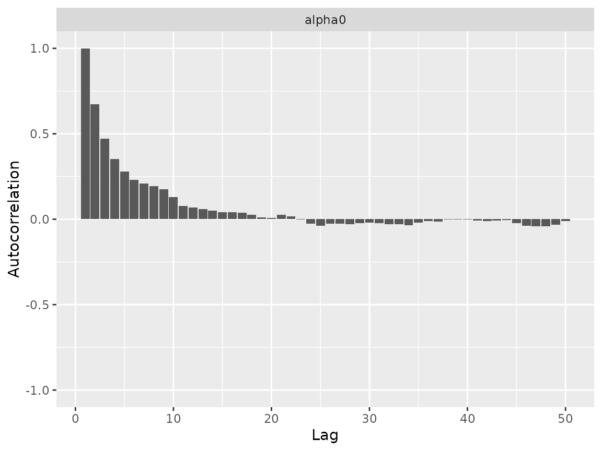
So here we see that we have some autocorrelation in the samples, and might consider using a higher thinning parameter in order to decrease it.
You can find other useful plotting functions in the package information:
help(package = "ggmcmc", help_type = "html")Similarly, using models from ModelPseudo class, we can
also obtain the prior and posterior samples of the model parameters via
MCMC.
For example, using the DLTmodel, data1, the empty data
set and options specified in earlier examples.
DLTsamples <- mcmc(data = data1, model = DLTmodel, options = options)The prior samples of the model parameters are now saved in the
variable DLTsamples.
data3 <- Data(
x = c(25, 50, 50, 75, 100, 100, 225, 300),
y = c(0, 0, 0, 0, 1, 1, 1, 1),
ID = as.integer(1:8),
cohort = c(1, 2, 2, 3, 4, 4, 5, 6),
doseGrid = seq(from = 25, to = 300, by = 25)
)
DLTpostsamples <- mcmc(data = data3, model = DLTmodel, options = options)Similarly, DLTpostsamples now contains the posterior
samples of the model parameters. %Since an output message as seen from
the above example will be display after each MCMC sampling when some
observed data are involved, the suppressMessages function
is used from now and throughout this document to avoid showing all of
these message in this document
This mcmc function also takes the data object, model and
the MCMC options. This is not using JAGS but just R for the
computations.
Under this DLTmodel, we will obtain samples of
φ1 and φ2. Using what has been described earlier
in this section , we can also look at the structure using function
str, extracting model parameters samples with
get and produce plots with ggs_traceplot and
ggs_autocorrelation for each of the model parameters.
When no MCMC sampling is involved, the posterior modal estimates of
the model parameters can be obtained for models (except the
EffFlexi class object) inheriting from the
ModelPseudo class object. First you need to put together
all currently available observations in form of a Data
object (when only DLT responses are modelled) or texttt{DataDual} object
(when both DLT and efficacy responses are modelled) class object. Then
using the update function to update your model, the
posterior modal estimates of the model parameters will be display in the
output of the model.
For example, we have some new observations specified in the data set
data3 and update the DLT model:
newDLTmodel <- update(object = DLTmodel, data = data3)
newDLTmodel@phi1## [1] -5.070681
newDLTmodel@phi2## [1] 1.125107In the example, the update function is used to obtain
the posterior modal estimates of the model parameters, φ1 and
φ2, which can then be extracted using the operator on the
updated result newDLTmodel.
Plotting the model fit
After having obtained the parameter samples, we can plot the model fit, by supplying the samples, model and data to the generic plot function:
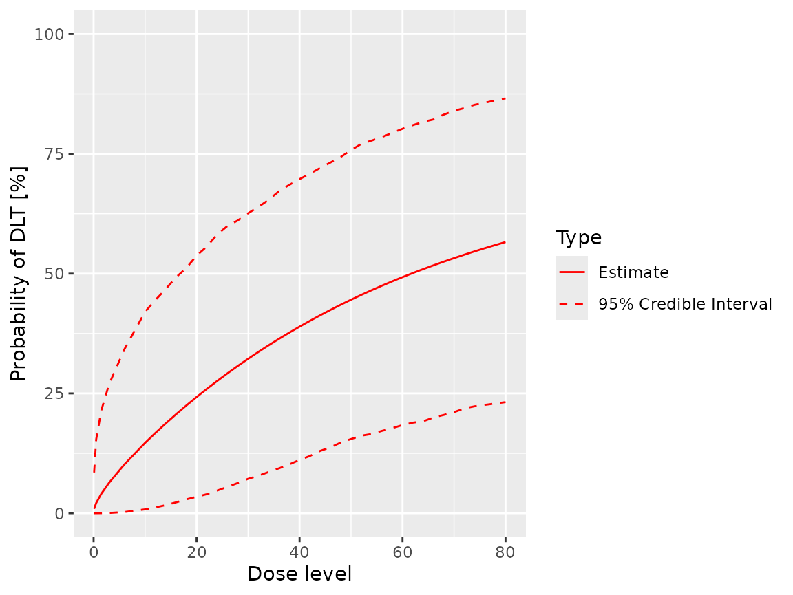
This plot shows the posterior mean curve and 95% equi-tailed credible
intervals at each point of the dose grid from the Data
object.
Note that you can also produce a plot of the prior mean curve and credible intervals, i.e. from the model without any data. This works in principle the same way as with data, just that we use an empty data object:
## provide only the dose grid:
emptydata <- Data(doseGrid = data@doseGrid)
## obtain prior samples with this Data object
priorsamples <- mcmc(emptydata, model, options)
## then produce the plot
print(plot(priorsamples, model, emptydata))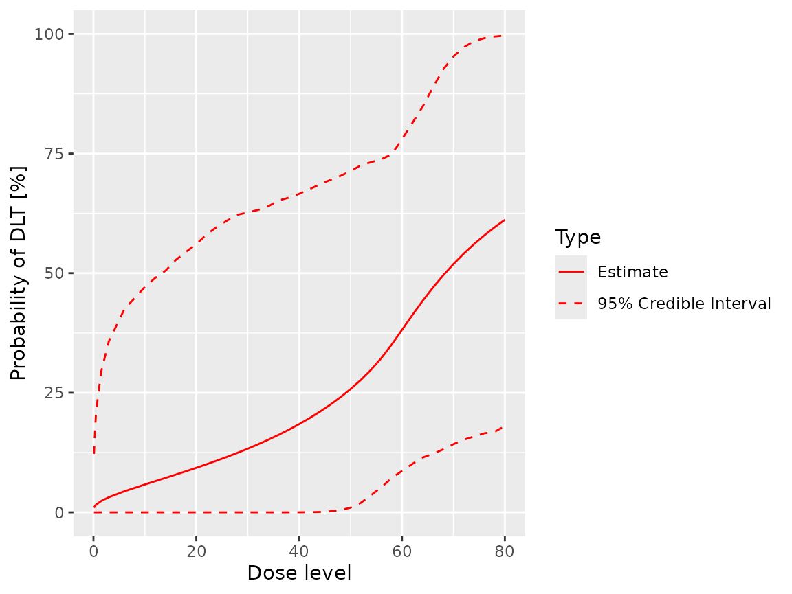
This plot function can also apply to the
DLTmodel when samples of the parameters have been
generated:

In addition, we can also plot the fitted dose-response curve using
the prior or the posterior modal estimates of the model parameters when
no MCMC sampling is used. For example, we have the DLTmodel
specified earlier under the ModelTox class with the data
set data1 we specified earlier:

Since no samples are involved, only the curve using the prior or posterior modal estimates of the parameters are produced, without 95% credibility intervals.
Escalation Rules
For the dose escalation, there are four kinds of rules:
-
Increments: For specifying maximum allowable increments between doses -
NextBest: How to derive the next best dose -
CohortSize: For specifying the cohort size -
Stopping: Stopping rules for finishing the dose escalation
We have listed here the classes of these rules, and there are
multiple subclasses for each of them, which you can find as links in the
help pages Increments-class, NextBest-class,
CohortSize-class and Stopping-class.
Increments rules
Figure @ref(fig:increments) shows the structure of the
Increments classes:
Increments classes structure
The Increments class is the basis for all maximum
increments rule classes within this package. There are three subclasses,
the IncrementsRelative, the
IncrementsRelativeParts and the
IncrementsRelativeDLTs classes. Let us start with looking
in detail at the increments rules. Currently two specific rules are
implemented: Maximum relative increments based on the current dose
(IncrementsRelative and
IncrementsRelativeParts, which only works with
DataParts objects), and maximum relative increments based
on the current cumulative number of DLTs that have happened
(IncrementsRelativeDLT).
For example, in order to specify a maximum increase of 100% for doses up to 20 mg, and a maximum of 33% for doses above 20 mg, we can setup the following increments rule:
myIncrements <- IncrementsRelative(
intervals = c(0, 20),
increments = c(1, 0.33)
)Here the intervals slot specifies the left bounds of the
intervals, in which the maximum relative Increments (note:
decimal values here, no percentages!) are valid.
The increments rule is used by the maxDose function to
obtain the maximum allowable dose given the current data:
nextMaxDose <- maxDose(myIncrements,
data = data
)
nextMaxDose## [1] 20So in this case, the next dose could not be larger than 20 mg.
In the following example the dose escalation will be restricted to a 3-fold (= 200%) increase:
myIncrements1 <- IncrementsRelative(
intervals = c(25),
increments = c(2)
)From all doses (since the dose grid starts at 25 mg) there is a maximum increase of 200% here.
The IncrementsRelativeDLT class works similarly, taking
the number of DLTs in the whole trial so far as the basis for the
maximum increments instead of the last dose.
Rules for next best dose recommendation
Figure @ref(fig:rules) show the structure of the next best dose
recommendation rules currently implemented in crmPack.
Escalation classes structure
All classes of escalation rules are contained in the
nextBest class. There are two main types of escalation
rules: either only the binary DLT responses are incorporated into the
escalation process, or a binary DLT and a continuous efficacy/biomarker
response are jointly incorporated into the escalation process.
There are two implemented rules for toxicity endpoint CRMs inheriting
from the GeneralModel class: NextBestMTD that
uses the posterior distribution of the MTD estimate (given a target
toxicity probability defining the MTD), and nextBestCRM
that implements the N-CRM, using posterior probabilities of
target-dosing and overdosing at the dose grid points to recommend a next
best dose.
For example, in order to use the N-CRM with a target toxicity interval from 20% to 35%, and a maximum overdosing probability of 25%, we specify:
myNextBest <- NextBestNCRM(
target = c(0.2, 0.35),
overdose = c(0.35, 1),
max_overdose_prob = 0.25
)Alternatively, we could use an MTD driven recommendation rule. For example, with a target toxicity rate of 33%, and recommending the 25% posterior quantile of the MTD, we specify
mtdNextBest <- NextBestMTD(
target = 0.33,
derive =
function(mtd_samples) {
quantile(mtd_samples, probs = 0.25)
}
)Note that the NextBestMTD class is quite flexible,
because you can specify a function derive that derives the
next best dose from the posterior MTD samples.
There are also two further next best dose recommendation rules when
the model is inheriting from the ModelTox class. One rule
is specified when no samples for the model parameters are involved and
the other one is when samples of the model parameters are generated and
are incorporated into the dose-escalation procedure.
The details about these rules are as follows. First, two
probabilities of the occurrence of a DLT have to be fixed. The first one
is called targetDuringTrial which is the target probability
of the occurrence of a DLT to be used during the trial. The second
probability is called targetEndOfTrial is the target
probability of the occurrence of a DLT to be used at the end of a trial.
The above two targets always have to be specified. For cases when
samples are involved, an additional argument has to be used, which is a
function to advise what we should recommend using the samples that we
have. This will be elaborated in details in the example below.
TDNextBest <- NextBestTD(
prob_target_drt = 0.35,
prob_target_eot = 0.3
)In this example, we fixed the target probability of the occurrence of
a DLT to be used during the trial be 0.35. This means we will allow
subjects to dose levels with probability of DLT closest and less than or
equal 0.35 during the trial. At the end of the trial, we will therefore
recommend a dose level which is closest and with probability of DLT less
than or equal to 0.3. This NextBestTD rule class can be
only used when no samples are involved in the escalation procedure. Next
we will show an example of the NextBestTDsamples rule class
when samples are involved in the escalation process.
TDsamplesNextBest <- NextBestTDsamples(
prob_target_drt = 0.35,
prob_target_eot = 0.3,
derive = function(samples) {
as.numeric(quantile(samples, probs = 0.3))
}
)The slot for targetDuringTrial and
targetEndOfTrial are specified in the same way as in the
last example given the value of 0.35 and 0.3, respectively. The
derive slot should always be specified with a function. In
this example, using the function specified in the derive
slot says that we will recommend the 30% posterior quantiles of the
samples to be the estimates for the doses corresponding to the
targetDuringTrial and targetEndOfTrial
doses.
During the study, in order to derive the next best dose, we supply
the generic nextBest function with the rule, the maximum
dose, the posterior samples, the model and the data:
doseRecommendation <- nextBest(myNextBest,
doselimit = nextMaxDose,
samples = samples, model = model, data = data
)The result is a list with two elements: value contains
the numeric value of the recommended next best dose, and
plot contains a plot that illustrates how the next best
dose was computed. In this case we used the N-CRM rule, therefore the
plot gives the target-dosing and overdosing probabilities together with
the safety bar of 25%, the maximum dose and the final recommendation
(the red triangle):
doseRecommendation$value## [1] 20
print(doseRecommendation$plot)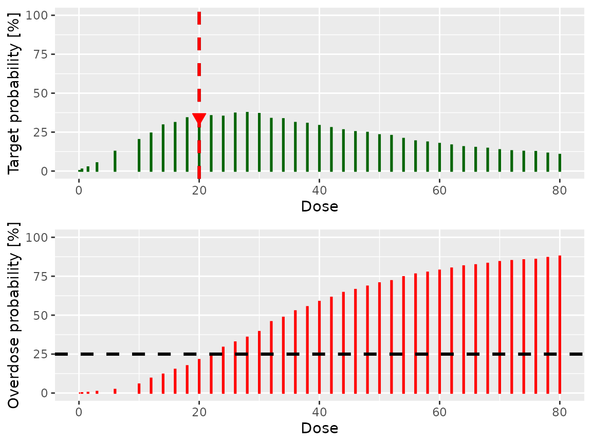
Similarly, we can use the the generic nextBest function
for theNextBestTD and NextBestTDsamples rules.
In the example below we will use the data set data3 with
DLT observations. We can compute the next best dose to be given to the
next cohort using the posterior modal estimates of the DLT model (i.e.,
no MCMC sampling involved here):
doseRecDLT <- nextBest(TDNextBest, doselimit = 300, model = newDLTmodel, data = data3)A list of numerical values and a plot showing how the next best dose
was computed will be given. This list of results will provide the
numerical values for the next dose level, next_dose_drt;
the target probability of DLT used during the trial,
prob_target_drt; the estimated dose level for which its
probability of DLT equals the target probability used during the trial,
dose_target_drt; the target probability of DLT used at the
end of a trial, prob_target_eot; the estimated dose level
for which its probability of DLT equals the target probability of DLT
used at the end of a trial dose_target_eot; and the dose
level at dose grid closest and less than the
dose_target_eot, next_dose_eot. We can use the
$ operator to obtain these values and the plot from the
list. For example,
doseRecDLT$next_dose_drt## [1] 50
doseRecDLT$prob_target_drt## [1] 0.35
doseRecDLT$dose_target_drt## [1] 52.28128
print(doseRecDLT$plot)We can see that the next dose suggested to be given to the next
cohort of subjects is 50 mg. The target probability of DLT during the
trial is 0.35 and the TD35 (the tolerated dose with probability of DLT
equal to 0.35) is estimated to be 52.28 mg. As we are using 12 dose
levels or dose grids from 25 mg to 300 mg with increments of 25 mg for
this data set, data3, we can see that what is suggested for
the next dose 50 mg is also the dose level closest below 52.28 mg, the
estimated dose_target_drt. Similarly, at the end of a trial
we could also obtain all “End Of Trial” estimates by using the
$ operator. In addition, we also have a plot to show next
dose allocation. The red curve shows the estimated DLT curve obtained
using the posterior modal estimates of the model parameters. We also
assumed the maximum allowable dose be 300 mg which was specified as the
doselimit parameter of the nextBest function
call and the red vertical line denoted with “Max” shows the maximum dose
level (at x-axis) that is allowed in this case. The vertical purple line
denoted with “Next” marks the dose level to be allocated to the next
cohort of subjects. In this example, the target probability of DLT used
during trial and at the end of a trial were 0.35 and 0.3, respectively.
The circle and the square on the DLT curve show where the probability of
DLT is estimated to be equal to 0.3 and 0.35, respectively. Hence, the
value of the estimated TD30 and TD35 can be checked at the x-axis
vertically below these symbols.
When MCMC sampling is involved, we will use the samples of model
parameters to choose the next best dose. For example, in the following
code chunk we use the data set, data3, with some DLT
observations and the posterior samples of the model parameters,
DLTpostsamples to compute the next best dose:
doseRecDLTSamples <- nextBest(TDsamplesNextBest,
doselimit = 300,
samples = DLTpostsamples, model = newDLTmodel,
data = data3
)The same list of results will be produced as in the example before:
The values of the next_dose_drt,
prob_target_drt, dose_target_drt,
prob_target_eot, dose_target_eot and
next_dose_eot can be obtained using the $
operator. The only difference is that the plot in this example will look
slightly different than in the previous example:
print(doseRecDLTSamples$plot)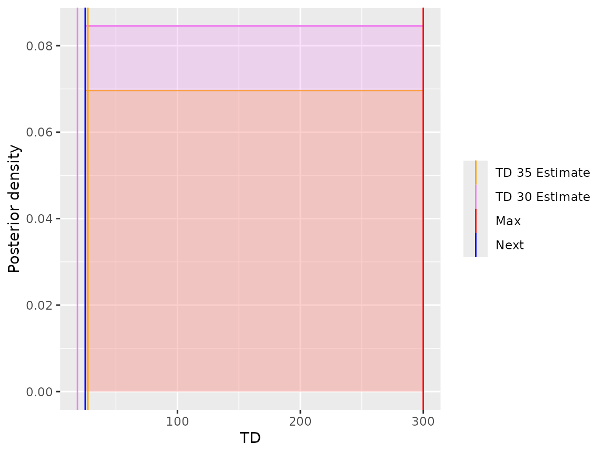 > This graph is incorrect
In the plot, vertical lines are given to show the value for the next dose, the TD30 estimate, the TD35 estimate and the maximum allowable dose level. Since samples of model parameters were utilized, the density curves of the TD30 (pink) and the TD35 (grey) are plotted.
Cohort size rules
df <- data.frame(
pathString = c(
"CohortSize/CohortSizeRange",
"CohortSize/CohortSizeDLT",
"CohortSize/CohortSizeConst",
"CohortSize/CohortSizeParts",
"CohortSize/CohortSizeMax",
"CohortSize/CohortSizeMin"
)
)
tree <- as.Node(df)
SetNodeStyle(tree, shape = "box")
plot(tree)CohortSize classes structure
% All classes related to cohort size in this package are contains
within CohortSize class.
Similarly to the increments rules, you can define intervals in the dose space and/or the DLT space to define the size of the cohorts. For example, let’s assume we want to have one patient only in the cohorts until we reach 30 mg or the first DLT is encountered, and then proceed with three patients per cohort.
We start by creating the two separate rules, first for the dose range:
mySize1 <- CohortSizeRange(intervals = c(0, 30), cohort_size = c(1, 3))Then for the DLT range:
mySize2 <- CohortSizeDLT(intervals = c(0, 1), cohort_size = c(1, 3))Finally we combine the two rules by taking the maximum number of patients of both rules:
mySize <- maxSize(mySize1, mySize2)The CohortSize rule is used by the size}` function,
together with the next dose and the current data, in order to determine
the size of the next cohort:
size(mySize,
dose = doseRecommendation$value,
data = data
)## [1] 3Here, because we have one DLT already, we would go for 3 patients for the next cohort.
Moreover, if you would like to have a constant cohort size, you can
use the following CohortSizeConst class, which we will use
(with three patients) for simplicity for the remainder of this
vignette:
mySize <- CohortSizeConst(size = 3)Stopping rules
All of the stopping rules classes inherit directly from the
Stopping class. There are in total 9 stopping rules, listed
as follows:
StoppingCohortNearDoseStoppingPatientsNearDoseStoppingMinCohortsStoppingMinPatientsStoppingTargetProbStoppingMTDdistributionStoppingTargetBiomarkerStoppingTDCIRatioStoppingMaxGainCIRatio
From the names of these stopping rules, we can have an idea of what
criteria have been used for stopping decisions and we will explain
briefly here what are these criteria. For further details please refer
to examples presented later in this vignette or examples given in the
help pages. You can find a link to all implemented stopping rule parts
in the help page Stopping-class.
For example, StoppingCohortNearDose class objects can be
used to stop the dose escalation based on the numbers of cohorts treated
near to the next best dose (where the required proximity is given as the
percentage of relative deviation from the next best dose). Similarly,
for StoppingPatientsNearDose, stopping is based on the
number of patients treated near the next best dose.
StoppingMinCohorts and StoppingMinPatients
rules can be used to stop the dose escalation if a minimum overall
number of patients or cohorts have been enrolled. We have also other
stopping rules such that a trial will be stopped either based on the MTD
distribution (StoppingMTDdistribution), or reached a
pre-specified probability of the next dose being in the target toxicity
interval (StoppingTargetProb) or or target biomarker
interval (StoppingTargetBiomarker) or when the current
estimate of the quantity of interest is ‘accurate’ enough
(StoppingTDCIRatio and
StoppingMaxGainCIRatio)
Stopping rules are often quite complex, because they are built from
“and/or” combinations of multiple parts. Therefore the
crmPack implementation mirrors this, and multiple atomic
stopping rules can be combined easily. For example, let’s assume we
would like to stop the trial if there are at least 3 cohorts and at
least 50% probability in the target toxicity interval \((20%, 35%)\), or the maximum sample size of
20 patients has been reached.
Then we start by creating the three pieces the rule is composed of:
myStopping1 <- StoppingMinCohorts(nCohorts = 3)
myStopping2 <- StoppingTargetProb(
target = c(0.2, 0.35),
prob = 0.5
)
myStopping3 <- StoppingMinPatients(nPatients = 20)Finally we combine these with the and operator
& and the or operator |:
myStopping <- (myStopping1 & myStopping2) | myStopping3We can also stop the trial when the current estimate of the quantity of interest, such as the TD30 given in earlier examples, is ‘accurate’ enough. The accuracy of the current estimate of TD30 is quantified by the width of the associated 95% credibility interval. The wider the interval, the less accurate the estimate is. In particular, the ratio of the upper to the lower limit of this 95% credibility interval is used. The smaller the ratio, the more accurate is the estimate.
For example, we will stop our trial if we obtain a ratio of less than 5 for the 95% credibility interval of the TD30 estimate in this case, deciding that we have obtained an estimate which is ‘accurate’ enough.
The StoppingTDCIRatio function can be used in both cases
when no DLT samples or DLT samples are involved:
myStopping4 <- StoppingTDCIRatio(target_ratio = 5, prob_target = 0.3)In the above two examples, the
targetRatioandtargetEndOfTrialhas to be specified.
During the dose escalation study, any (atomic or combined) stopping
rule can be used by the function stopTrial to determine if
the rule has already been fulfilled. For example in our case:
stopTrial(
stopping = myStopping, dose = doseRecommendation$value,
samples = samples, model = model, data = data
)## [1] FALSE
## attr(,"message")
## attr(,"message")[[1]]
## attr(,"message")[[1]][[1]]
## [1] "Number of cohorts is 6 and thus reached the prespecified minimum number 3"
##
## attr(,"message")[[1]][[2]]
## [1] "Probability for target toxicity is 36 % for dose 20 and thus below the required 50 %"
##
##
## attr(,"message")[[2]]
## [1] "Number of patients is 8 and thus below the prespecified minimum number 20"
##
## attr(,"individual")
## attr(,"individual")[[1]]
## [1] FALSE
## attr(,"message")
## attr(,"message")[[1]]
## [1] "Number of cohorts is 6 and thus reached the prespecified minimum number 3"
##
## attr(,"message")[[2]]
## [1] "Probability for target toxicity is 36 % for dose 20 and thus below the required 50 %"
##
## attr(,"individual")
## attr(,"individual")[[1]]
## [1] TRUE
## attr(,"message")
## [1] "Number of cohorts is 6 and thus reached the prespecified minimum number 3"
## attr(,"report_label")
## [1] NA
##
## attr(,"individual")[[2]]
## [1] FALSE
## attr(,"message")
## [1] "Probability for target toxicity is 36 % for dose 20 and thus below the required 50 %"
## attr(,"report_label")
## [1] NA
##
## attr(,"report_label")
## [1] NA
##
## attr(,"individual")[[2]]
## [1] FALSE
## attr(,"message")
## [1] "Number of patients is 8 and thus below the prespecified minimum number 20"
## attr(,"report_label")
## [1] NA
##
## attr(,"report_label")
## [1] NAWe receive here FALSE, which means that the stopping
rule criteria have not been met. The attribute message
contains the textual results of the atomic parts of the stopping rule.
Here we can read that the probability for target toxicity was just 30%
for the recommended dose 20 mg and therefore too low, and also the
maximum sample size has not been reached, therefore the trial shall
continue.
In the same way the stopping rule myStopping4 (no
samples and with samples) can be evaluated:
stopTrial(
stopping = myStopping4, dose = doseRecDLTSamples$next_dose_drt,
samples = DLTpostsamples, model = newDLTmodel, data = data3
)## [1] FALSE
## attr(,"message")
## [1] "95% CI is (0.000611274483578011, 10459.1345133637), Ratio = 17110373.1537 is greater than target_ratio = 5"
## attr(,"report_label")
## [1] NA
stopTrial(
stopping = myStopping4, dose = doseRecDLT$next_dose_drt,
model = newDLTmodel, data = data3
)## [1] FALSE
## attr(,"message")
## [1] "95% CI is ( 11.0662 , 164.618 ), Ratio = 14.8758 is greater than target_ratio = 5"
## attr(,"report_label")
## [1] NAwhen DLT samples or no DLT samples are involved.
Note that at the moment the
andoperator&and theoroperator|cannot be used together withStoppingTDCIRatioclass objects. This is still under development.
Simulations
In order to run simulations, we first have to build a specific design, that comprises a model, the escalation rules, starting data, a cohort size and a starting dose.
The structure of the design classes in this package is shown in figure @ref(fig:Design).Design classes structure
It might seem strange at first sight that we have to supply starting
data to the design, but we will show below that this makes sense. First,
we use our emptydata object that only contains the dose
grid, and a cohorts of 3 patients, starting from 0.1 mg:
design <- Design(
model = model,
nextBest = myNextBest,
stopping = myStopping,
increments = myIncrements,
cohort_size = mySize,
data = emptydata,
startingDose = 3
)Another example will be given when the TDDesign class is
used. The empty data set, data1 will be used, and the
starting dose will be 25 mg. The code below will be a design defined
when no MCMC sampling is involved. The nextBest slot under
this TDDesign class function has to be defined with the
TDNextBest class object to ensure we will pick the next
best dose using rules as defined when no MCMC sampling is involved. In
addition, we define here with myStopping4 that the trial
will only stop when the ratio of the 95% credibility interval limits of
the current estimate of TD30 (TDtargetEndOfTrial) is less
than or equal to 5. In addition, we also use myIncrements1,
mySize and data1 defined in earlier examples
for the increments, cohort_size and
data slots in defining the TDDesign
object:
DLTdesign <- TDDesign(
model = DLTmodel,
nextBest = TDNextBest,
stopping = myStopping4,
increments = myIncrements1,
cohort_size = mySize,
data = data1,
startingDose = 25
)When MCMC samples are involved, we also have to specify a design to
ensure our package will run the simulations using the MCMC samples of
the model parameters for models specified under the
ModelPseudo class object. In the example, the
TDsamplesDesign class object has to be used with the
TDsamplesNextBest class object in the nextBest
slot to ensure MCMC sampling is involved for this design. We also apply
the stopping rule myStopping4 or myStopping3
such that the trial will stop either when the ratio of the 95%
credibility interval limits of the current estimate of TD30
(TDtargetEndOfTrial) is less than or equal to 5
(myStopping4) or when a maximum of 30 patients has been
enrolled in the trial (myStopping3):
DLTsamplesDesign <- TDsamplesDesign(
model = DLTmodel,
nextBest = TDsamplesNextBest,
stopping = (myStopping4 | myStopping3),
increments = myIncrements1,
cohort_size = mySize,
data = data1,
startingDose = 25
)Examining single trial behavior
Before looking at the “many trials” operating characteristics, it is
important to look at the “single trial” operating characteristics of the
dose escalation design. For this, crmPack provides the
function examine, which generates a data.frame
showing the beginning of several hypothetical trial courses under the
design. Assuming no DLTs have been seen until a certain dose, then the
consequences of different number of DLTs being observed at this dose are
shown. In the current example we have
## dose DLTs nextDose stop increment
## 1 3 0 6.0 FALSE 100
## 2 3 1 6.0 FALSE 100
## 3 3 2 0.1 FALSE -97
## 4 3 3 NA FALSE NA
## 5 6 0 12.0 FALSE 100
## 6 6 1 12.0 FALSE 100
## 7 6 2 3.0 FALSE -50
## 8 6 3 0.5 FALSE -92
## 9 12 0 24.0 FALSE 100
## 10 12 1 24.0 FALSE 100
## 11 12 2 14.0 FALSE 17
## 12 12 3 6.0 FALSE -50
## 13 24 0 30.0 FALSE 25
## 14 24 1 30.0 FALSE 25
## 15 24 2 26.0 FALSE 8
## 16 24 3 18.0 FALSE -25
## 17 30 0 38.0 FALSE 27
## 18 30 1 38.0 FALSE 27
## 19 30 2 36.0 FALSE 20
## 20 30 3 26.0 FALSE -13
## 21 38 0 50.0 FALSE 32
## 22 38 1 50.0 FALSE 32
## 23 38 2 42.0 FALSE 11
## 24 38 3 36.0 FALSE -5
## 25 50 0 58.0 TRUE 16
## 26 50 1 54.0 TRUE 8
## 27 50 2 50.0 TRUE 0
## 28 50 3 44.0 TRUE -12Note that it is important to set a seed, since minor changes might
occur due to sampling variations. However, the mcmcOptions
parameter should be chosen in order to minimize such variation. The
default setting, used implicitly in the above call, should normally be
sufficient, but checking this (by running the function twice with
different seeds and comparing the results) is important.
The resulting data frame gives the dose of the cohort until which no
DLTs are observed, the number of DLTs, the resulting next dose
recommendation, whether the design would stop, and the relative
increment of the next dose compared to the current dose in percentage.
Note that cohort size rules are taken into account by
examine. NA entries mean that the design would
stop without a valid dose, since all doses are considered too toxic
after observing the number of DLTs at that dose.
Simulating from a true scenario
For the “many trials” operating characteristics, we have to define a true scenario, from which the data should arise. In this case, this only requires a function that computes the probability of DLT given a dose. Here we use a specific case of the function contained in the model space:
## define the true function
myTruth <- probFunction(model, alpha0 = 7, alpha1 = 8)
## plot it in the range of the dose grid
curve(myTruth(x), from = 0, to = 80, ylim = c(0, 1))
In a similar way, we can also simulate trials based on a true DLT
scenario using the TDDesign and the
TDsamplesDesign.
First, we will specified the true DLT scenario such that
## define the true function
TrueDLT <- probFunction(DLTmodel, phi1 = -53.66584, phi2 = 10.50499)
## plot it in the range of the dose grid
curve(TrueDLT, from = 25, to = 300, ylim = c(0, 1))
This true DLT scenario will be used for both the
TDDesign and the TDsamplesDesign
Now we can proceed to the simulations. We only generate 100 trial outcomes here for illustration, for the actual study this should be increased of course to at least 500:
time <- system.time(mySims <- simulate(design,
args = NULL,
truth = myTruth,
nsim = 100,
seed = 819,
mcmcOptions = options,
parallel = FALSE
))[3]
time## elapsed
## 126.342We have wrapped the call to simulate in a
system.time to obtain the required time for the simulations
(about 126 seconds in this case). The argument args could
contain additional arguments for the truth function, which
we did not require here and therefore let it at the default
NULL. We specify the number of simulations with
nsim and the random number generator seed with
seed. Note that we also pass again the MCMC options object,
because during the trial simulations the MCMC routines are used.
Finally, the argument parallel can be used to enable the
use of all processors of the computer for running the simulations in
parallel. This can yield a meaningful speedup, especially for larger
number of simulations.
As (almost) always, the result of this call is again an object with a
class, in this case Simulations:
class(mySims)## [1] "Simulations"
## attr(,"package")
## [1] "crmPack"From the help page
help("Simulations-class", help = "html")## starting httpd help server ... donewe see that this class is a subclass of the
GeneralSimulations class. By looking at the help pages for
Simulations and the parent class
GeneralSimulations, we can find the description of all
slots of mySims. In particular, the Data slot
contains the list of produced Data objects of the simulated
trials. Therefore, we can plot the course of e.g. the third simulated
trial as follows:

The final dose for this trial was
mySims@doses[3]## [1] 24and the stopping reason was
mySims@stop_reasons[[3]]## [[1]]
## [[1]][[1]]
## [1] "Number of cohorts is 6 and thus reached the prespecified minimum number 3"
##
## [[1]][[2]]
## [1] "Probability for target toxicity is 54 % for dose 24 and thus above the required 50 %"
##
##
## [[2]]
## [1] "Number of patients is 18 and thus below the prespecified minimum number 20"Furthermore, with this object, we can apply two methods. First, we can plot it, i.e. we can apply the plot method:
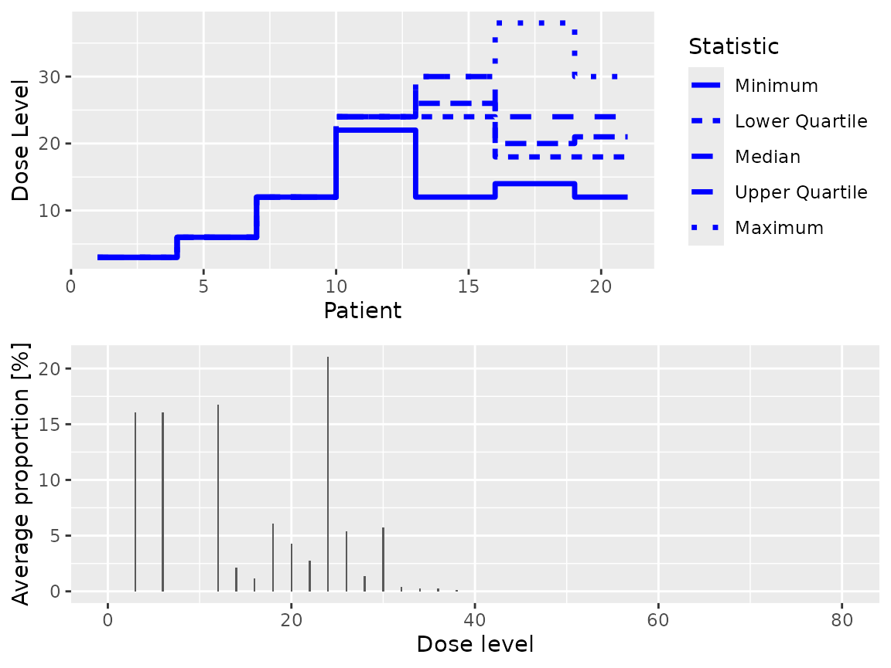
The resulting plot shows on the top panel a summary of the trial
trajectories. On the bottom, the proportions of doses tried, averaged
over the simulated trials, are shown. Note that you can select the plots
by changing the type argument of plot, which
by default is type = c("trajectory", "dosesTried").
Second, we can summarize the simulation results. Here again we have
to supply a true dose-toxicity function. We take the same
(myTruth) as above:
summary(mySims,
truth = myTruth
)## Summary of 100 simulations
##
## Target toxicity interval was 20, 35 %
## Target dose interval corresponding to this was 19.6, 21.6
## Intervals are corresponding to 10 and 90 % quantiles
##
## Number of patients overall : mean 19 (18, 21)
## Number of patients treated above target tox interval : mean 7 (6, 9)
## Proportions of DLTs in the trials : mean 26 % (22 %, 29 %)
## Mean toxicity risks for the patients on active : mean 25 % (16 %, 34 %)
## Doses selected as MTD : mean 20.8 (17.8, 26)
## True toxicity at doses selected : mean 32 % (10 %, 70 %)
## Proportion of trials selecting target MTD: 30 %
## Dose most often selected as MTD: 20
## Observed toxicity rate at dose most often selected: 26 %
## Fitted toxicity rate at dose most often selected : mean 26 % (21 %, 30 %)Note that sometimes the observed toxicity rate at the dose most often selected (here 20 mg) is not available, because it can happen that no patients were actually treated that dose during the simulations. (Here it is available.) This illustrates that the MTD can be selected based on the evidence from the data at other dose levels – which is an advantage of model-based dose-escalation designs.
Now we can also produce a plot of the summary results, which gives a bit more detail than the textual summary we have just seen:
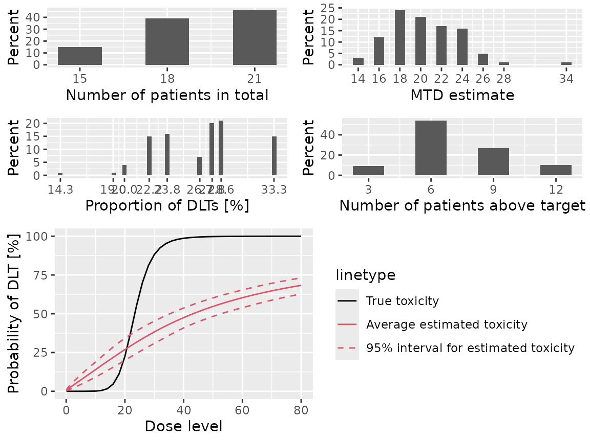
The top left panel shows the distribution of the sample size across the simulated trials. In this case the trials had between 15 and 21 patients. The top right panel shows the distribution of the final MTD estimate / recommended dose across the simulated trials. The middle left panel shows the distribution across the simulations of the DLT proportions observed in the patients dosed. Here in most trials between 20 and 30% of the patients had DLTs. The middle right panel shows the distribution across simulations of the number of patients treated above the target toxicity window (here we used the default from 20% to 35%). Finally, in the bottom panel we see a comparison of the true dose-toxicity curve (black) with the estimated dose-toxicity curves, averaged (continuous red line) across the trials and with 95% credible interval across the trials. Here we see that the steep true dose-toxicity curve is not recovered by the model fit.
If we find that e.g. the top right plot with the distribution of the
final selected doses is too small and shows not the right x-axis window,
we can only plot this one and add x-axis customization on top: (see the
ggplot2 documentation for more information on customizing
the plots)
dosePlot <- plot(simSum, type = "doseSelected") +
scale_x_continuous(breaks = 10:30, limits = c(10, 30))## Scale for x is already present.
## Adding another scale for x, which will replace the existing scale.
print(dosePlot)## Warning: Removed 1 rows containing missing values (`geom_bar()`).Some further examples will be given for simulations using the
TDDesign and the TDsamplesDesign classes. For
illustration purpose, we will generate only 10 trial outcomes.
DLTSim <- simulate(DLTdesign,
args = NULL,
truth = TrueDLT,
nsim = 10,
seed = 819,
parallel = FALSE
)The above is an example when no MCMC sampling is involved and we have another example below for simulation when MCMC sampling is involved:
DLTsampSim <- simulate(DLTsamplesDesign,
args = NULL,
truth = TrueDLT,
nsim = 10,
seed = 819,
mcmcOptions = options,
parallel = FALSE
)The meaning of these arguments are the same as those defined and
explained above in the simulate example for the
Design class. % With slots args to specify any
additional arguments for the truth function,
truth for the real DLT scenario to simulate responses from,
nsim for the number of simulations, seed, the
random generator seed and parallel to specify whether
parallel computing is to be used for running the simulations.
Similarly, the results of individual simulations can be obtained
graphically using the plot function. The dose level for
recommendation that is the dose levels closest below the final estimated
TD30 (the final estimates of the dose level with probability of DLT
equals to the target end of trial) was
DLTSim@doses[3]## [1] 100
DLTsampSim@doses[3]## [1] 100The overall results of the 100 trials for these two simulations can also be plotted as
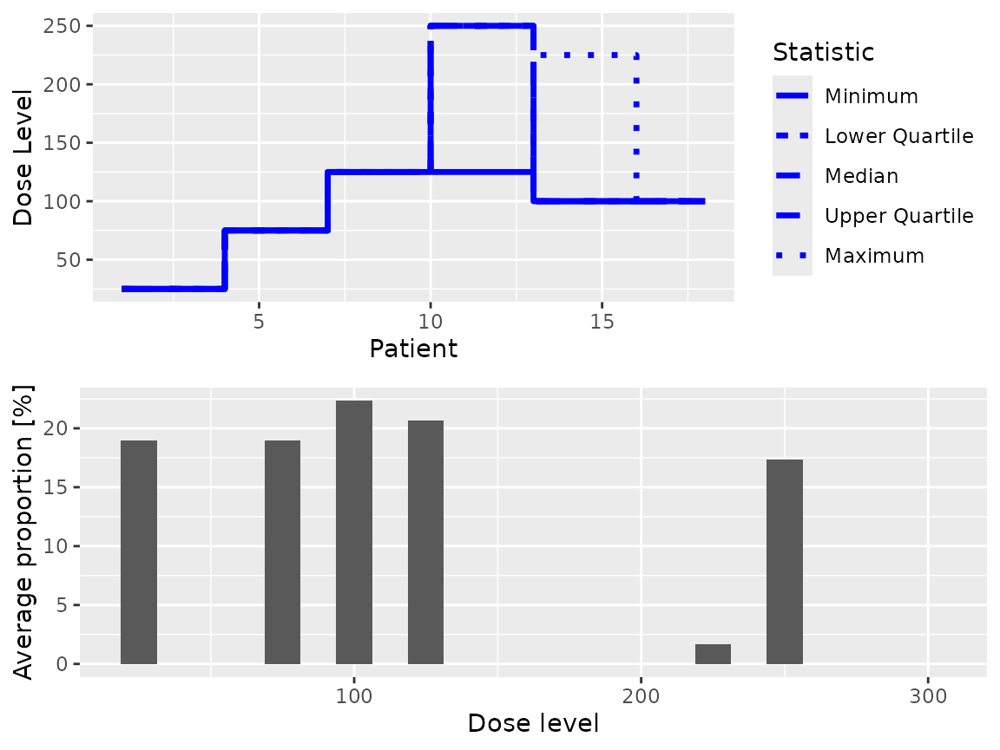
which show the trial trajectories and the proportion of doses level tried.
These simulation results can also be summarized using the
summary function given the truth:
summary(DLTSim,
truth = TrueDLT
)## Summary of 10 simulations
##
## Target probability of DLE p(DLE) used at the end of a trial was 30 %
## The dose level corresponds to the target p(DLE) used at the end of a trial, TDEOT, was 152.6195
## TDEOT at dose Grid was 150
## Target p(DLE) used during a trial was 35 %
## The dose level corresponds to the target p(DLE) used during a trial, TDDT, was 155.972
## TDDT at dose Grid was 150
## Number of patients overall : mean 16 (15, 18)
## Number of patients treated above the target p(DLE) used at the end of a trial : mean 3 (3, 3)
## Number of patients treated above the target p(DLE) used during a trial : mean 3 (3, 3)
## Proportions of observed DLT in the trials : mean 21 % (20 %, 22 %)
## Mean toxicity risks for the patients : mean 20 % (17 %, 21 %)
## Doses selected as TDEOT : mean 100 (100, 100)
## True toxicity at TDEOT : mean 1 % (1 %, 1 %)
## Proportion of trials selecting the TDEOT: 0 %
## Proportion of trials selecting the TDDT: 0 %
## Dose most often selected as TDEOT: 100
## Observed toxicity rate at dose most often selected: 6 %
## Fitted probabilities of DLE at dose most often selected : mean 24 % (24 %, 25 %)
## The summary table of the final TDEOT across all simulations
## Min. 1st Qu. Median Mean 3rd Qu. Max.
## 117.3 120.1 123.8 122.0 123.8 123.8
## The summary table of the final ratios of the TDEOT across all simulations
## Min. 1st Qu. Median Mean 3rd Qu. Max.
## 4.054 4.157 4.447 4.330 4.447 4.447
## The summary table of the final TDDT across all simulations
## Min. 1st Qu. Median Mean 3rd Qu. Max.
## 137.5 140.7 144.4 142.5 144.4 144.4
## The summary table of dose levels, the optimal dose
## to recommend for subsequent study across all simulations
## Min. 1st Qu. Median Mean 3rd Qu. Max.
## 117.3 120.1 123.8 122.0 123.8 123.8
## The summary table of the final ratios of the optimal dose for stopping across
## all simulations
## Min. 1st Qu. Median Mean 3rd Qu. Max.
## 4.054 4.157 4.447 4.330 4.447 4.447
summary(DLTsampSim,
truth = TrueDLT
)## Summary of 10 simulations
##
## Target probability of DLE p(DLE) used at the end of a trial was 30 %
## The dose level corresponds to the target p(DLE) used at the end of a trial, TDEOT, was 152.6195
## TDEOT at dose Grid was 150
## Target p(DLE) used during a trial was 35 %
## The dose level corresponds to the target p(DLE) used during a trial, TDDT, was 155.972
## TDDT at dose Grid was 150
## Number of patients overall : mean 21 (21, 21)
## Number of patients treated above the target p(DLE) used at the end of a trial : mean 1 (0, 3)
## Number of patients treated above the target p(DLE) used during a trial : mean 1 (0, 3)
## Proportions of observed DLT in the trials : mean 10 % (5 %, 14 %)
## Mean toxicity risks for the patients : mean 6 % (1 %, 10 %)
## Doses selected as TDEOT : mean 100 (75, 125)
## True toxicity at TDEOT : mean 2 % (0 %, 5 %)
## Proportion of trials selecting the TDEOT: 0 %
## Proportion of trials selecting the TDDT: 0 %
## Dose most often selected as TDEOT: 100
## Observed toxicity rate at dose most often selected: 6 %
## Fitted probabilities of DLE at dose most often selected : mean 22 % (18 %, 26 %)
## The summary table of the final TDEOT across all simulations
## Min. 1st Qu. Median Mean 3rd Qu. Max.
## 97.28 100.35 115.37 114.40 125.23 135.76
## The summary table of the final ratios of the TDEOT across all simulations
## Min. 1st Qu. Median Mean 3rd Qu. Max.
## 1.000e+01 6.800e+01 4.079e+06 5.241e+11 1.917e+11 3.806e+12
## The summary table of the final TDDT across all simulations
## Min. 1st Qu. Median Mean 3rd Qu. Max.
## 118.8 122.2 144.9 143.3 161.5 170.3
## The summary table of dose levels, the optimal dose
## to recommend for subsequent study across all simulations
## Min. 1st Qu. Median Mean 3rd Qu. Max.
## 97.28 100.35 115.37 114.40 125.23 135.76
## The summary table of the final ratios of the optimal dose for stopping across
## all simulations
## Min. 1st Qu. Median Mean 3rd Qu. Max.
## 1.000e+01 6.800e+01 4.079e+06 5.241e+11 1.917e+11 3.806e+12Then we can also plot the summary of these two simulations using the
plot function:
and
Predicting the future course of the trial
By simulating parameters from their current posterior distribution instead of an assumed true scenario, it is possible to generate trial simulations from the posterior predictive distribution at any time point during the trial. This means that we can predict the future course of the trial, given the current data. In our illustrating example, this would work as follows.
The rationale of the simulate call is now that we
specify as the truth argument the prob
function from our assumed model.
For the simulations, these arguments are internally given by the
values contained in the data frame given to simulate as the
args argument. In our case, we want to supply the posterior
samples of alpha0 and alpha1 in this data
frame. We take only 50 out of the 2000 posterior samples in order to
reduce the runtime for this example:
postSamples <- as.data.frame(samples@data)[(1:20) * 50, ]
postSamples## alpha0 alpha1
## 50 -1.3638482 0.6051534
## 100 0.3635856 0.5014000
## 150 0.2660523 0.1511878
## 200 -0.8546810 0.9321286
## 250 0.3515237 0.9865473
## 300 -0.2780316 0.9861991
## 350 -1.6596323 0.8385508
## 400 -0.7376582 0.6596640
## 450 -0.3214541 0.3098870
## 500 0.5958671 0.9095670
## 550 -0.7324474 1.0782009
## 600 0.1514773 1.0823443
## 650 -0.4438488 0.9495352
## 700 1.5355211 0.9750417
## 750 0.6474636 1.3922311
## 800 -0.9571174 1.6381196
## 850 0.7004483 1.9151077
## 900 -1.2981845 1.0299982
## 950 0.6332035 1.1745774
## 1000 -1.7211984 0.3799383Therefore, each simulated trial will come from a posterior sample of our estimated model, given all data so far.
Furthermore we have to make a new Design object that
contains the current data to start from, and the current recommended
dose as the starting dose:
nowDesign <- Design(
model = model,
nextBest = myNextBest,
stopping = myStopping,
increments = myIncrements,
cohort_size = mySize,
## use the current data:
data = data,
## and the recommended dose as the starting dose:
startingDose = doseRecommendation$value
)Finally we can execute the simulations:
time <- system.time(futureSims <- simulate(
## supply the new design here
nowDesign,
## the truth is the assumed prob function
truth = function(dose, alpha0, alpha1) {
samples <- Samples(
data = list(alpha0 = alpha0, alpha1 = alpha1),
options = McmcOptions(samples = 1)
)
prob(dose, model, samples)
},
## further arguments are the
## posterior samples
args = postSamples,
## do exactly so many simulations as
## we have samples
nsim = nrow(postSamples),
seed = 918,
## this remains the same:
mcmcOptions = options,
parallel = FALSE
))[3]
time## elapsed
## 14.376And now, exactly in the same way as above for the operating characteristics simulations, we can summarize the resulting predictive simulations, for example show the predicted trajectories of doses:
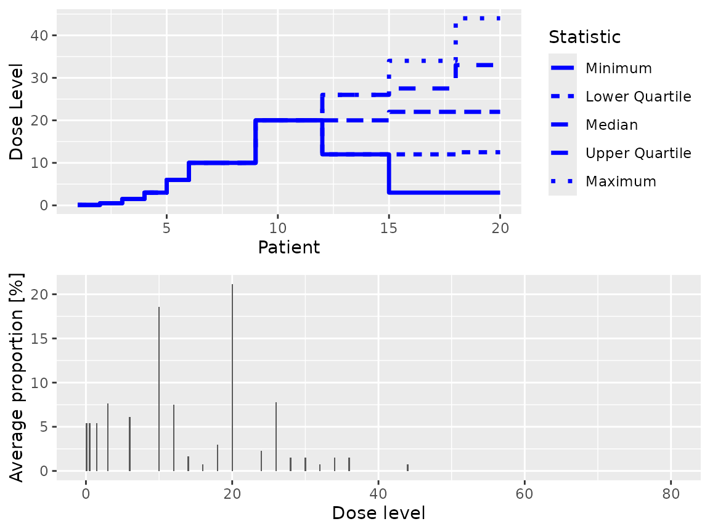
In the summary, we do not need to look at the characteristics involving the true dose-toxicity function, because in this case we are not intending to compare the performance of our CRM relative to a truth:
summary(futureSims,
truth = myTruth
)## Summary of 20 simulations
##
## Target toxicity interval was 20, 35 %
## Target dose interval corresponding to this was 19.6, 21.6
## Intervals are corresponding to 10 and 90 % quantiles
##
## Number of patients overall : mean 19 (17, 20)
## Number of patients treated above target tox interval : mean 3 (0, 9)
## Proportions of DLTs in the trials : mean 23 % (10 %, 31 %)
## Mean toxicity risks for the patients on active : mean 18 % (4 %, 43 %)
## Doses selected as MTD : mean 21.9 (10, 46.6)
## True toxicity at doses selected : mean 32 % (0 %, 100 %)
## Proportion of trials selecting target MTD: 0 %
## Dose most often selected as MTD: 12
## Observed toxicity rate at dose most often selected: 28 %
## Fitted toxicity rate at dose most often selected : mean 20 % (7 %, 30 %)We see here e.g. that the estimated number of patients overall is 19, so 11 more than the current 8 patients are expected to be needed before finishing the trial.
Simulating 3+3 design outcomes
While crmPack focuses on model-based dose-escalation
designs, it also includes the 3+3 design in order to allow for
convenient comparisons. Note that actually no simulations would be
required for the 3+3 design, because all possible outcomes can be
enumerated, however we still rely here on simulations for consistency
with the overall crmPack design.
The easiest way to setup a 3+3 design is the function
ThreePlusThreeDesign:
threeDesign <- ThreePlusThreeDesign(doseGrid = c(5, 10, 15, 25, 35, 50, 80))
class(threeDesign)## [1] "RuleDesign"
## attr(,"package")
## [1] "crmPack"We have used here a much coarser dose grid than for the model-based
design before, because the 3+3 design cannot jump over doses. The
starting dose is automatically chosen as the first dose from the grid.
The outcome is a RuleDesign object, and you have more setup
options if you directly use the RuleDesign() initialization
function. We can then simulate trials, again assuming that the
myTruth function gives the true dose-toxicity
relationship:
threeSims <- simulate(threeDesign,
nsim = 1000,
seed = 35,
truth = myTruth,
parallel = FALSE
)As before for the model-based design, we can summarize the simulations:
threeSimsSum <- summary(threeSims,
truth = myTruth
)
threeSimsSum## Summary of 1000 simulations
##
## Target toxicity interval was 20, 35 %
## Target dose interval corresponding to this was 19.6, 21.6
## Intervals are corresponding to 10 and 90 % quantiles
##
## Number of patients overall : mean 16 (15, 18)
## Number of patients treated above target tox interval : mean 4 (3, 6)
## Proportions of DLTs in the trials : mean 17 % (13 %, 22 %)
## Mean toxicity risks for the patients on active : mean 17 % (14 %, 22 %)
## Doses selected as MTD : mean 15.2 (15, 15)
## True toxicity at doses selected : mean 4 % (3 %, 3 %)
## Proportion of trials selecting target MTD: 0 %
## Dose most often selected as MTD: 15
## Observed toxicity rate at dose most often selected: 3 %Here we see that mg was the dose most often selected as MTD, and this
is actually too low when comparing with the narrow target dose interval
going from to mg. This is an inherent problem of dose-escalation designs
where the dose grid has to be coarse: you might not know before starting
the trial which is the range where you need a more refined dose grid. In
this case we obtain doses that are too low, as one can see from the
average true toxicity of ~% at doses selected. Graphical summaries are
again obtained by calling plot on the summary object:

Dual-endpoint dose escalation designs
In this section, we will look into dose-escalation procedures included in this package where two end points are incorporated into the study. The first endpoint is the binary DLT response that we discussed already in the last sections. The second endpoint is the continuous biomarker/efficacy response. In this package, we can either model these two responses jointly (using a single model class, assuming correlation) or separately (using two separate model classes, assuming no correlation).
Now we will first describe how we model the two responses jointly.
Dual-endpoint designs with a joint model
As a disclaimer, please note that the designs in this section are still under development, and so far we have not yet been published. Therefore please consider them as experimental.
In the help page DualEndpoint-class the general joint
model structure is described. Basically the idea is that a (single)
biomarker variable is the second endpoint of the dose-escalation design,
with the aim to maximize the biomarker response while controlling
toxicity in a safe range. This is useful when it can not be assumed that
just increasing the dose will always lead to better efficacy.
Let’s look at the data structure. Here is an example:
data <- DataDual(
x =
c(
0.1, 0.5, 1.5, 3, 6, 10, 10, 10,
20, 20, 20, 40, 40, 40, 50, 50, 50
),
y =
c(
0, 0, 0, 0, 0, 0, 1, 0,
0, 1, 1, 0, 0, 1, 0, 1, 1
),
ID = as.integer(1:17),
cohort = as.integer(c(1:5, 6, 6, 6, 7, 7, 7, 8, 8, 8, 9, 9, 9)),
w =
c(
0.31, 0.42, 0.59, 0.45, 0.6, 0.7, 0.55, 0.6,
0.52, 0.54, 0.56, 0.43, 0.41, 0.39, 0.34, 0.38, 0.21
),
doseGrid =
c(
0.1, 0.5, 1.5, 3, 6,
seq(from = 10, to = 80, by = 2)
)
)The corresponding plot can again be obtained with:
Here we see that there seems to be a maximum biomarker response at around 10 mg already. In order to model this data, we consider a dual-endpoint model with a first-order random-walk (RW1) structure for the dose-biomarker relationship:
model <- DualEndpointRW(
mean = c(0, 1),
cov = matrix(c(1, 0, 0, 1), nrow = 2),
sigma2betaW =
0.01,
sigma2W =
c(a = 0.1, b = 0.1),
rho =
c(a = 1, b = 1),
rw1 = TRUE
)We use a smoothing parameter \(\sigma^{2}_{\beta_{W}} = 0.01\), an inverse-gamma prior \(\mathrm{IG}(0.1, 0.1)\) on the biomarker variance \(\sigma^{2}_{W}\) and a uniform prior (or \(\mathrm{Beta}(1, 1)\) prior) on the correlation \(\rho\) between the latent DLT and the biomarker variable.
As the dual-endpoint models are more complex, it is advisable to use a sufficiently long Markov chain for fitting them. Here we just use for illustration purposes a quite small Markov chain – again, for the real application, this would need to be at least 25 times longer!
options <- McmcOptions(
burnin = 100,
step = 2,
samples = 2000
)Then we can obtain the MCMC samples:
samples <- mcmc(data, model, options)And we check the convergence by picking a few of the fitted biomarker means and plotting their traceplots:
data@nGrid## [1] 41
betaWpicks <- get(samples, "betaW", c(1L, 5L, 10L, 25L))
ggs_traceplot(betaWpicks)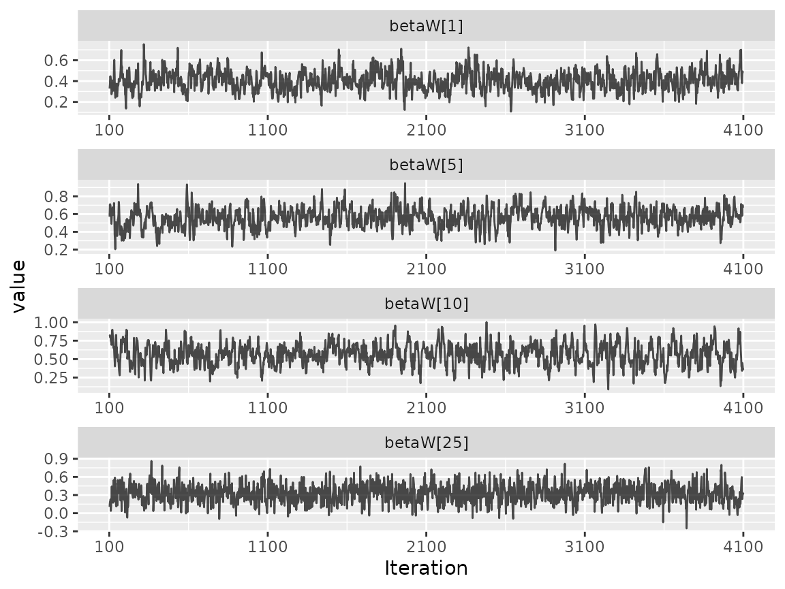
Here all 4 \(\beta_{W,j}\) (\(j=1, 5, 10, 25\)) means, which are the
biomarker means at the first, 5th, 10th and 25th gridpoint,
respectively, seem to have converged, as the traceplots show. (Remember
that data@nGrid gives the number of grid points.) So we can
plot the model fit:
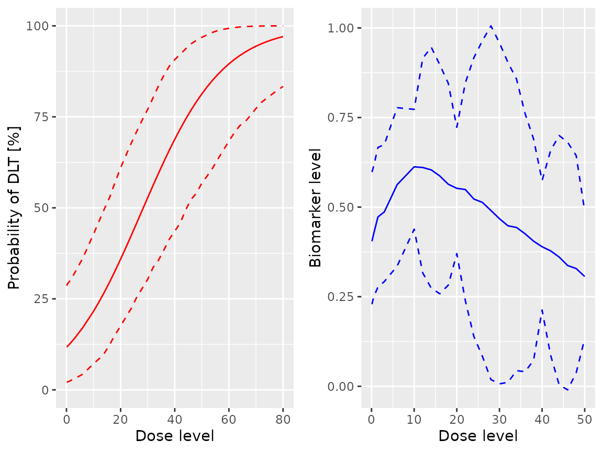
We specify extrapolate = FALSE to focus the biomarker
plot in the right panel on the observed dose range, so we don’t want to
extrapolate the biomarker fit to higher dose levels. We can also look at
the estimated biomarker precision \(1 /
\sigma^{2}_{W}\). For that we extract the precision
precW and then use another ggmcmc function to
create the histogram:
ggs_histogram(get(samples, "precW"))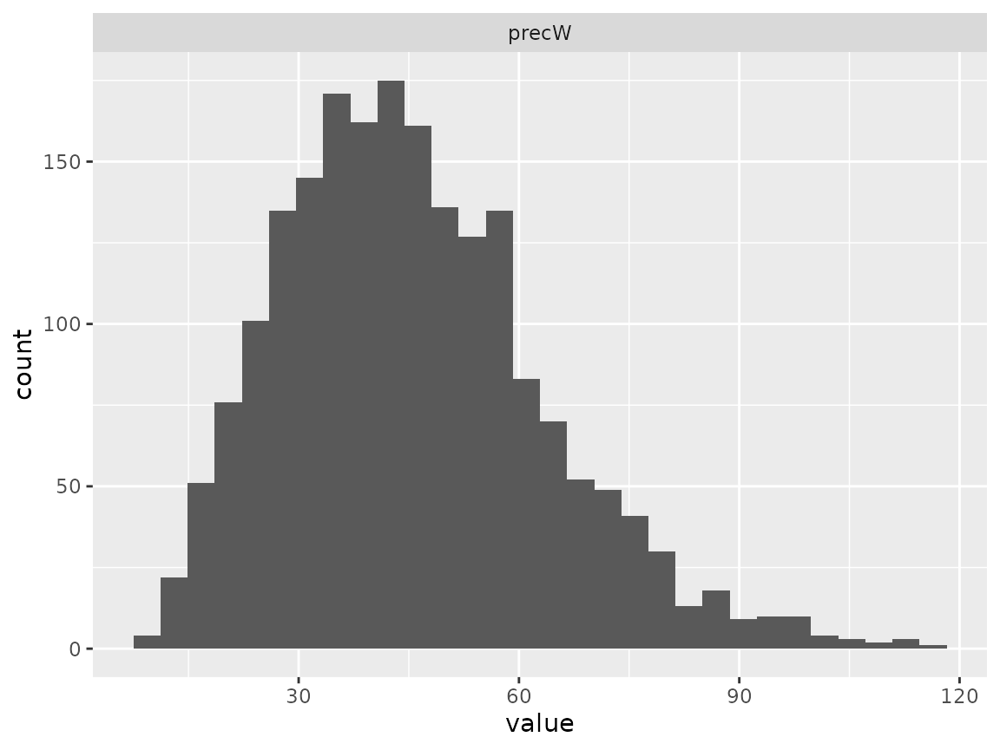
For the selection of the next best dose, a special class
NextBestDualEndpoint has been implemented. It tries to
maximize the biomarker response, under an NCRM-type safety constraint.
If we want to have at least 90% of the maximum biomarker response, and a
25% maximum overdose probability for the next dose, we specify:
myNextBest <- NextBestDualEndpoint(
target = c(0.9, 1),
overdose = c(0.35, 1),
max_overdose_prob = 0.25
)In our example, and assuming a dose limit of 50 mg given by the maximum allowable increments, the next dose can then be found as follows:
nextDose <- nextBest(myNextBest,
doselimit = 50,
samples = samples,
model = model,
data = data
)
nextDose$value## [1] 12A corresponding plot can be produced by printing the
plot element of the returned list:
print(nextDose$plot)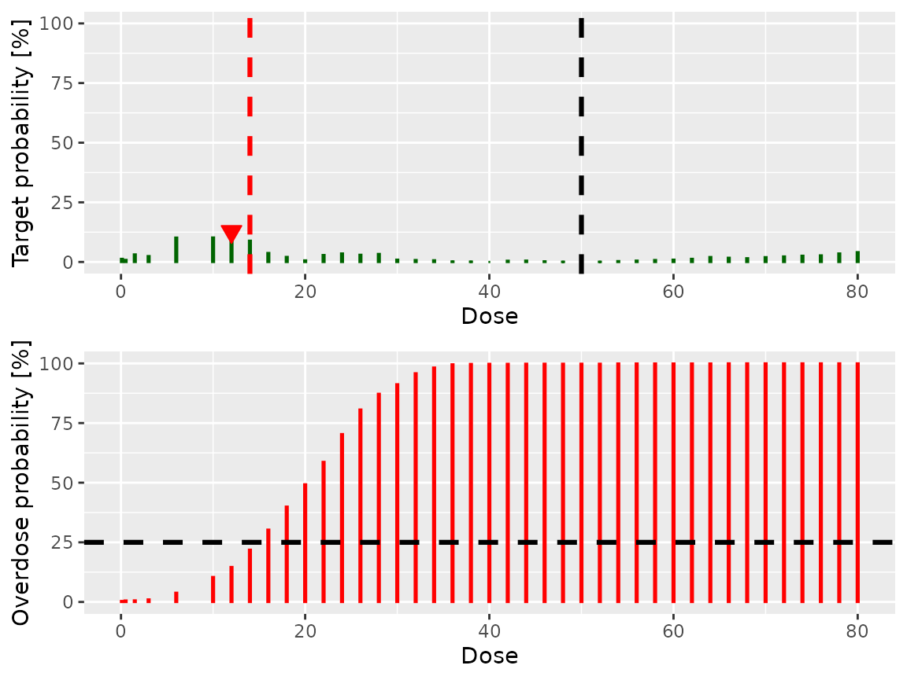
Here the bottom panel shows (as for the NCRM) the overdose probability, and we see that doses above 14 mg are too toxic. In the top panel, we see the probability for each dose to reach at least 90% of the maximum biomarker response in the dose grid — this is here our target probability. While the numbers are low, we clearly see that there is a local maximum at 6 mg of the target probability, confirming what we have seen in the previous data and model fit plots.
A corresponding stopping rule exists. When we have a certain
probability to be above a relative biomarker target, then the
StoppingTargetBiomarker rule gives back TRUE
when queried if it has been fulfilled by the stopTrial
function. For example, if we require at least 50% probability to be
above 90% biomarker response, we specify:
myStopping6 <- StoppingTargetBiomarker(
target = c(0.9, 1),
prob = 0.5
)In this case, the rule has not been fulfilled yet, as we see here:
stopTrial(myStopping6,
dose = nextDose$value,
samples, model, data
)## [1] FALSE
## attr(,"message")
## [1] "Probability for target biomarker is 11 % for dose 12 and thus below the required 50 %"
## attr(,"report_label")
## [1] NAAgain, this dual-endpoint specific rule can be combined as required with any other stopping rule. For example, we could combine it with a maximum sample size of 40~patients:
myStopping <- myStopping6 | StoppingMinPatients(40)If one or both of the stopping rules are fulfilled, then the trial is stopped.
Let’s try to build a corresponding dual-endpoint design. We start with an empty data set, and use the relative increments rule defined in a previous section and use a constant cohort size of 3 patients:
emptydata <- DataDual(doseGrid = data@doseGrid)
design <- DualDesign(
model = model,
data = emptydata,
nextBest = myNextBest,
stopping = myStopping,
increments = myIncrements,
cohort_size = CohortSizeConst(3),
startingDose = 6
)In order to study operating characteristics, we need to determine
true biomarker and DLT probability functions. Here we are going to use a
biomarker function from the beta family. Note that there is a
corresponding DualEndpointBeta model class, that allows to
have dual-endpoint designs with the beta biomarker response function.
Have a look at the corresponding help page for more information on that.
But let’s come back to our scenario definition:
betaMod <- function(dose, e0, eMax, delta1, delta2, scal) {
maxDens <- (delta1^delta1) * (delta2^delta2) / ((delta1 + delta2)^(delta1 + delta2))
dose <- dose / scal
e0 + eMax / maxDens * (dose^delta1) * (1 - dose)^delta2
}
trueBiomarker <- function(dose) {
betaMod(dose, e0 = 0.2, eMax = 0.6, delta1 = 5, delta2 = 5 * 0.5 / 0.5, scal = 100)
}
trueTox <- function(dose) {
pnorm((dose - 60) / 10)
}We can draw the corresponding curves:
par(mfrow = c(1, 2))
curve(trueTox(x), from = 0, to = 80)
curve(trueBiomarker(x), from = 0, to = 80)
So the biomarker response peaks at 50 mg, where the toxicity is still low. After deciding for a true correlation of \(\rho=0\) and a true biomarker variance of \(\sigma^{2}_{W} = 0.01\) (giving a high signal-to-noise ratio), we can start simulating trials (starting each with 6 mg):
mySims <- simulate(design,
trueTox = trueTox,
trueBiomarker = trueBiomarker,
sigma2W = 0.01,
rho = 0,
nsim = 10,
parallel = FALSE,
seed = 3,
startingDose = 6,
mcmcOptions =
McmcOptions(
burnin = 1000,
step = 1,
samples = 3000
)
)Note that we are having a “small” MCMC option set here, in order to reduce simulation time — for the real application, this should be “larger”.
Plotting the result gives not only an overview of the final dose recommendations and trial trajectories, but also a summary of the biomarker variance and correlation estimates in the simulations:
## Note: method with signature 'Simulations#missing' chosen for function 'plot',
## target signature 'DualSimulations#missing'.
## "GeneralSimulations#missing" would also be valid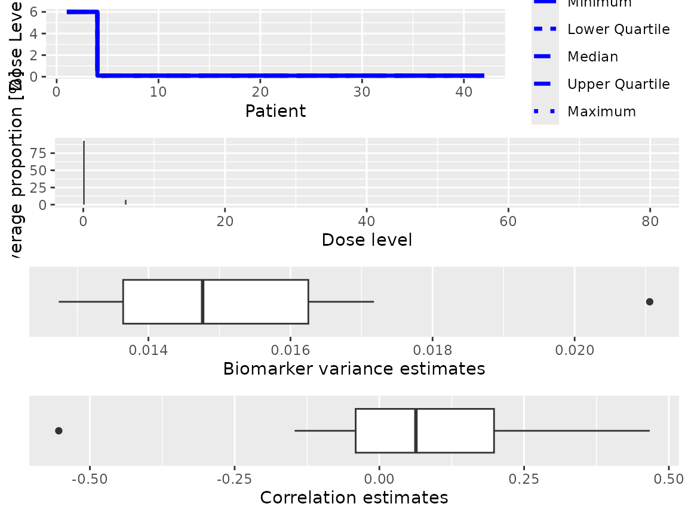
Finally, a summary of the simulations can be obtained with the corresponding function:
sumOut <- summary(mySims,
trueTox = trueTox,
trueBiomarker = trueBiomarker
)
sumOut## Summary of 10 simulations
##
## Target toxicity interval was 20, 35 %
## Target dose interval corresponding to this was 51.6, 56.1
## Intervals are corresponding to 10 and 90 % quantiles
##
## Number of patients overall : mean 42 (42, 42)
## Number of patients treated above target tox interval : mean 0 (0, 0)
## Proportions of DLTs in the trials : mean 0 % (0 %, 0 %)
## Mean toxicity risks for the patients on active : mean 0 % (0 %, 0 %)
## Doses selected as MTD : mean 0.1 (0.1, 0.1)
## True toxicity at doses selected : mean 0 % (0 %, 0 %)
## Proportion of trials selecting target MTD: 0 %
## Dose most often selected as MTD: 0.1
## Observed toxicity rate at dose most often selected: 0 %
## Fitted toxicity rate at dose most often selected : mean 2 % (1 %, 2 %)
## Fitted biomarker level at dose most often selected : mean 0.2 (0.2, 0.2)We see here that all trials proceeded until the maximum sample size of 40 patients (reaching 42 because of the cohort size 3). The doses selected are lower than the toxicity target range, because here we were aiming for a biomarker target instead, and the true biomarker response peaked at 50 mg.
The corresponding plot looks as follows:
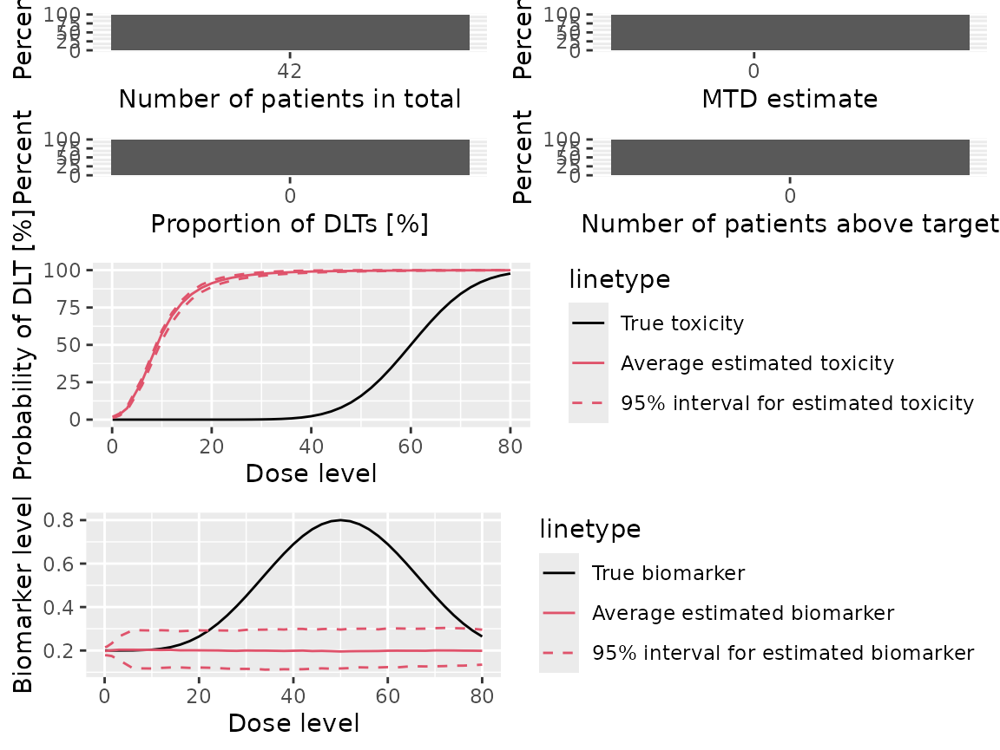
We see that the average biomarker fit is not too bad in the range up to 50 mg, but the toxicity curve fit is bad — probably a result of the very low frequency of DLTs.
Again the warning here: the dual-endpoint designs are still experimental!
% Next we will talk about dose escalation designs where the two endpoints are modelled separately.
Dual-endpoint designs with separate models
In this subsection, we will look into the dose-escalation designs where we model the binary DLT responses and the continuous biomarker/efficacy responses separately. Here we hence assume that there is no correlation between the binary DLT and continuous efficacy responses.
First, we have to define the data sets for the dual responses using
the DataDual function just like in the example given in the
last subsection.
data2 <- DataDual(doseGrid = seq(25, 300, 25))
data4 <- DataDual(
x = c(25, 50, 50, 75, 100, 100, 225, 300),
y = c(0, 0, 0, 0, 1, 1, 1, 1),
ID = as.integer(1:8),
cohort = as.integer(c(1, 2, 2, 3, 4, 4, 5, 6)),
w = c(0.31, 0.42, 0.59, 0.45, 0.6, 0.7, 0.6, 0.52),
doseGrid = seq(25, 300, 25)
)In this example, data2 is the empty data set where 12
dose levels, from 25 to 300 mg with increments of 25 mg are used. The
variable data4 contains the data set with both the binary
DLT and continuous efficacy responses observations. The elements in the
slot x are the dose levels where 8 subjects are treated.
The elements in slot y represent the corresponding binary
DLT responses observed for these 8 subjects and the elements in slot
w represent the continuous efficacy responses obtained for
the 8 subjects.
Similarly, we can also obtain a plot of the data sets using the
plot function as described in the last subsection.
As described, we will model the two responses separately. In order to
do so, we will only use models inheriting from the
ModelPseudo class.
For the binary DLT responses, we can use any of the models inheriting
from the ModelTox class. In the example below we will use
models inheriting from the LogisticIndepBeta class which is
the variable DLTmodel (or newDLTmodel with
observations) given in previous examples.
For the continuous efficacy responses, we can use any models
inheriting from the ModelEff class. In the current version
of the package, there are two model classes, the Effloglog
and the EffFlexi model, inheriting from the
ModelEff class. Since ModelEff is also
inheriting from the ModelPseudo class, the prior for this
efficacy model also needs to be specified in the form of pseudo data.
(Please refer to @ref(fig:model-classes) for the structure of model
classes defined in this package.)
The following commands show how we set up the Effloglog
model. This is an efficacy model to describe the relationship between
the efficacy responses to their corresponding dose levels on a double
logarithmic (“log-log”) scale. This refers to a linear model with three
unknown parameters: the intercept θ1, the slope θ2
and the precision \(\nu\) (inverse of
the variance) of the efficacy responses. Similarly to other pseudo
models, the data set has to be specified before setting up the
model:
Effmodel <- Effloglog(
eff = c(1.223, 2.513),
eff_dose = c(25, 300),
nu = c(a = 1, b = 0.025),
data = data2
)For the specification of the prior pseudo data, two dose levels 25
and 300 mg are fixed and specified in the eff_dose slot.
After eliciting the prior expected efficacy values at these two dose
levels (e.g. by asking for experts’), these are specified in the
eff slot. Here for example, 1.223 is the expected efficacy
value for subjects treated at dose 25 mg and 2.513 is the expected
efficacy value for subjects treated at 300 mg. The slot nu
represents the prior precision of the efficacy responses. In this
example, two positive scalars for \(a\)
and \(b\) are specified suggesting the
prior distribution of the precision is gamma with shape parameter \(a=1\) and rate parameter \(b=0.025\). Note here, since a gamma
distribution is used as the prior distribution of \(\nu\), the posterior distribution will
again be a gamma distribution, because the gamma prior on the precision
is conjugate to the normal likelihood. If a fixed value of the precision
is preferred, a single positive scalar can also be specified in
nu slot. Finally the Data slot is specified
either with an empty data set or a data set with all currently available
observations.
Similarly, we can also look at the structure of the Effmodel by
applying the str function:
str(Effmodel)## Formal class 'Effloglog' [package "crmPack"] with 13 slots
## ..@ eff : num [1:2] 1.22 2.51
## ..@ eff_dose : num [1:2] 25 300
## ..@ nu : Named num [1:2] 1 0.025
## .. ..- attr(*, "names")= chr [1:2] "a" "b"
## ..@ use_fixed: logi FALSE
## ..@ theta1 : num -1.41
## ..@ theta2 : num 2.25
## ..@ Pcov : num [1:2, 1:2] NaN NaN NaN NaN
## .. ..- attr(*, "dimnames")=List of 2
## .. .. ..$ : chr [1:2] "(Intercept)" "log(log(x))"
## .. .. ..$ : chr [1:2] "(Intercept)" "log(log(x))"
## ..@ X : num [1:2, 1:2] 1 1 1.17 1.74
## .. ..- attr(*, "dimnames")=List of 2
## .. .. ..$ : chr [1:2] "1" "2"
## .. .. ..$ : chr [1:2] "(Intercept)" "log(log(x))"
## .. ..- attr(*, "assign")= int [1:2] 0 1
## ..@ Y : num [1:2] 1.22 2.51
## ..@ mu : num [1:2] -1.41 2.25
## ..@ Q : num [1:2, 1:2] 2 2.91 2.91 4.4
## .. ..- attr(*, "dimnames")=List of 2
## .. .. ..$ : chr [1:2] "(Intercept)" "log(log(x))"
## .. .. ..$ : chr [1:2] "(Intercept)" "log(log(x))"
## ..@ const : num 0
## ..@ data :Formal class 'DataDual' [package "crmPack"] with 10 slots
## .. .. ..@ w : num(0)
## .. .. ..@ x : num(0)
## .. .. ..@ y : int(0)
## .. .. ..@ doseGrid: num [1:12] 25 50 75 100 125 150 175 200 225 250 ...
## .. .. ..@ nGrid : int 12
## .. .. ..@ xLevel : int(0)
## .. .. ..@ placebo : logi FALSE
## .. .. ..@ ID : int(0)
## .. .. ..@ cohort : int(0)
## .. .. ..@ nObs : int 0There are 15 slots, which can be accessed with the @
operator. From this efficacy model, we can obtain the prior (if using an
empty data set) or the posterior modal estimates of model parameters
θ1 (intercept) and θ2 (slope). In addition, if a
gamma prior distribution is used for \(\nu\) and we have some observations (data)
available, then we can obtain the updated values of the shape \(a\) and the rate \(b\) parameters for the gamma distribution,
via the model. The joint prior and posterior density functions of
θ1 and θ2 are described in details in (Yeung et al. 2015).
Next, we will describe an example when a flexible semi-parametric function is used to describe the relationship between the efficacy values and their corresponding dose levels. The differences of the mean efficacy responses of neighboring dose levels are modeled by the either first or second order random walk models. This flexible model aims to capture different shapes of the dose-efficacy curve. We will estimate the mean efficacy responses obtained at each of the dose levels by MCMC sampling. % will be involved to obtain the prior and posterior distribution of all these mean efficacy responses.
This flexible form can be specified by using the
EffFlexi class object. The EffFlexi class is
inheriting from the ModelEff class and its prior is also
specified with pseudo data:
Effmodel2 <- EffFlexi(
eff = c(1.223, 2.513),
eff_dose = c(25, 300),
sigma2W = c(a = 0.1, b = 0.1),
sigma2betaW = c(a = 20, b = 50),
rw1 = FALSE,
data = data2
)Here, similarly to above, we also fixed two dose levels 25 and 300 mg
and supplied the prior expected efficacy responses 1.223 and 2.513. The
variance of the efficacy responses \(\sigma^2\) under this model can be
specified with a single positive scalar value or two positive scalar
values for the shape \(a\) and the
scale \(b\) parameters of the inverse
gamma distribution in the slot sigma2. In here, we
specified the variance of the efficacy responses with the inverse gamma
distribution with shape parameter \(a=0.1\) and scale parameter \(b=0.1\). Then, the variance of the random
walk model \(\sigma^2_{\beta_W}\) can
also be specified either with a single positive scalar or two positive
scalar for the parameters of the inverse gamma distribution in the slot
sigma2betaW. In here, we specified the variance of the
random walk model with the inverse gamma distribution with shape
parameter \(a=20\) and scale parameter
\(b=50\). In addition, we can also
specify how we would like to smooth the mean efficacy response function.
Either the first order (with RW1) or the second order (with
RW2) random walk model can be used to describe the
relationship between the neighbouring mean efficacy responses and is
specified in the the slot smooth. As seen in our example,
RW2, the second order random walk model is used. Finally,
we also have to specify the data set in Data to be used for
the model which is data2 in this example.
The structure of the EffFlexi model object is as
follows:
str(Effmodel2)## Formal class 'EffFlexi' [package "crmPack"] with 10 slots
## ..@ eff : num [1:2] 1.22 2.51
## ..@ eff_dose : num [1:2] 25 300
## ..@ sigma2W : Named num [1:2] 0.1 0.1
## .. ..- attr(*, "names")= chr [1:2] "a" "b"
## ..@ sigma2betaW: Named num [1:2] 20 50
## .. ..- attr(*, "names")= chr [1:2] "a" "b"
## ..@ use_fixed : Named logi [1:2] FALSE FALSE
## .. ..- attr(*, "names")= chr [1:2] "sigma2W" "sigma2betaW"
## ..@ rw1 : logi FALSE
## ..@ X : int [1:2, 1:12] 1 0 0 0 0 0 0 0 0 0 ...
## ..@ RW : num [1:12, 1:12] 1 -2 1 0 0 0 0 0 0 0 ...
## ..@ RW_rank : int 10
## ..@ data :Formal class 'DataDual' [package "crmPack"] with 10 slots
## .. .. ..@ w : num(0)
## .. .. ..@ x : num(0)
## .. .. ..@ y : int(0)
## .. .. ..@ doseGrid: num [1:12] 25 50 75 100 125 150 175 200 225 250 ...
## .. .. ..@ nGrid : int 12
## .. .. ..@ xLevel : int(0)
## .. .. ..@ placebo : logi FALSE
## .. .. ..@ ID : int(0)
## .. .. ..@ cohort : int(0)
## .. .. ..@ nObs : int 0The slot and the names are shown which can be accessed with the
@ operator. The value ‘FALSE’ of the slot
useFixed shows that both the variance of the efficacy
response sigma2 and the variance of the random walk model
`sigma2betaWare not fixed, but estimated and assigned an inverse gamma prior distribution in this model. The slotuseRW1also gives a 'FALSE' value which means that the second order random walk model has been used to model the smooth dose-response function. In addition, the (only internally required) random walk difference matrix and the rank of this matrix are also shown in the slotRWmatandRWmatRank`,
respectively.
As discussed, the posterior estimates for model parameters specified
under ModelPseudo class (except the EffFlexi
model class) can be obtained as the modal estimates or via MCMC
sampling. In here, we will first show how we obtain the estimates of the
parameters via MCMC sampling. (Similarly, we can also use the
mcmc function to obtain prior and posterior samples of the
Effloglog and the EffFlexi models.) % using
Effmodel or Effmodel2, respectively with data2 and options specified
earlier
Effsamples <- mcmc(data = data2, model = Effmodel, options)
Effsamples2 <- mcmc(data = data2, model = Effmodel2, options)
Effpostsamples <- mcmc(data = data2, model = Effmodel, options)
Effpostsamples2 <- mcmc(data = data2, model = Effmodel2, options)Under the Effloglog (Effmodel) model, samples of the
intercept θ1, the slope θ2 of the efficacy linear
log-log model and the precision \(\nu\)
of the efficacy responses can be obtained. For the EffFlexi
(Effmodel2) model, the samples of the mean efficacy responses at all
dose levels, the variance \(\sigma^2\)
(sigma2) of the efficacy responses and the variance \(\sigma^2_{\beta_W}\) (sigma2betaW) of the
random walk model are obtained. It is also again possible to look at the
structure (str) and extract (get) and obtain
plots (ggs_traceplot and ggs_autocorrelation)
of the samples of the parameters.
If no MCMC sampling is involved, the prior or the posterior modal
estimates can be obtained in the output of the models. If some
observations for both responses are available, they can be put in a
DataDual data set, and given to the Data slot
under each model. We can also do so by updating the current model with
the new observations using the update function. Then the
prior or the posterior modal estimates of the model parameters can be
obtained using the @ operator of the model. For example,
for the Effloglog class model:
newEffmodel <- update(object = Effmodel, data = data4)
newEffmodel@theta1## [1] -2.81695
newEffmodel@theta2## [1] 2.709524
newEffmodel@nu## a b
## 3.0000000 0.9832955The posterior modal estimates of θ1 and θ2 and the updated values of parameters of the gamma distribution of \(\nu\) can be read now from the output above.
Similarly we can update with new data for the EffFlexi
class model:
newEffmodel2 <- update(object = Effmodel2, data = data4)
newEffmodel2@RW## [,1] [,2] [,3] [,4] [,5] [,6] [,7] [,8] [,9] [,10] [,11] [,12]
## [1,] 1 -2 1 0 0 0 0 0 0 0 0 0
## [2,] -2 5 -4 1 0 0 0 0 0 0 0 0
## [3,] 1 -4 6 -4 1 0 0 0 0 0 0 0
## [4,] 0 1 -4 6 -4 1 0 0 0 0 0 0
## [5,] 0 0 1 -4 6 -4 1 0 0 0 0 0
## [6,] 0 0 0 1 -4 6 -4 1 0 0 0 0
## [7,] 0 0 0 0 1 -4 6 -4 1 0 0 0
## [8,] 0 0 0 0 0 1 -4 6 -4 1 0 0
## [9,] 0 0 0 0 0 0 1 -4 6 -4 1 0
## [10,] 0 0 0 0 0 0 0 1 -4 6 -4 1
## [11,] 0 0 0 0 0 0 0 0 1 -4 5 -2
## [12,] 0 0 0 0 0 0 0 0 0 1 -2 1The plot function can also be applied to the
Effloglog model class or the EffFlexi model
class objects, when samples of the parameters are generated under all
these models:


In addition, we can also plot the fitted dose-efficacy curve using
the prior or the posterior modal estimates of the model parameters when
no MCMC sampling is used. For example, using Effmodel and
data set data2 specified earlier:

Since no samples are involved, only the curves using the prior or posterior modal estimates of the parameters are produced, and no 95% credibility intervals are provided.
Furthermore, we can also plot the estimated DLT probability and
efficacy curve side by side using the plotDualResponses
function. For example, using the DLTmodel,
Effmodel and data2 specified in earlier
examples:
plotDualResponses(
DLEmodel = DLTmodel,
Effmodel = Effmodel, data = data2
)When the MCMC samples are used, we have:
plotDualResponses(
DLEmodel = DLTmodel, DLEsamples = DLTsamples,
Effmodel = Effmodel, Effsamples = Effsamples, data = data2
)
Next we will talk about the dose escalation rules when two separate
models are used for the dual responses. All Increments,
CohortSize and the Stopping rules classes
described earlier can be applied here. We will now look into additional
nextBest and Stopping classes rules that we
can use in this situation.
In here, the decision of choosing the next best dose for administration is based on a gain function we defined (Yeung et al. 2015). This gain function represents a trade-off between the DLT and efficacy responses such that we will allocate the dose which gives the best trade-off between these responses. In other words, the dose which gives the maximum gain value will be the dose allocated to the next cohort of subjects. The basic ideas of this rules are as follows. % old text: Assume that no DLT is observed in a subject, the gain value observed at a particular dose level is obtained by multiplying the probability of no DLT observed at this dose levels and all expected efficacy responses when no DLT is observed at this particular dose level. %new: The gain value at a particular dose level is obtained by multiplying the probability of no DLT at this dose level and the expected efficacy response at this dose level. As the data accumulates in the trial, the estimate of the gain function will improve. This gain function consists of two components, one part is about the DLT responses and the other about the efficacy response. It depends on the values obtained in each of the components which will affect the values of the gain.
For example, the most ideal case is that both the probability of no DLT and the expected value of the efficacy response are high. The gain value obtained will then be very high. This is the reason why the dose which gives the maximum gain value should be allocated to the next cohort of subjects.
We can plot the gain function given a DLT model specified under the
ModelTox class and an efficacy model specified under the
ModelEff class using the plotGain function.
For example, using the variables newDLTmodel,
newEffmodel and the data set with observations,
data4, specified in earlier examples, we have:
plotGain(DLEmodel = newDLTmodel, Effmodel = newEffmodel, data = data4)
This is a case where no MCMC sampling is involved such that the prior and posterior modal estimates of the model parameters are used.
There are two implemented nextBest rules for the dual
responses using the gain function: the NextBestMaxGain and
the NextBestMaxGainSamples class object. The
NextBestMaxGain is used when no MCMC sampling are involved
and we will use the prior or the posterior modal estimates of the model
parameters to obtain the gain values at each of the dose levels, while
the NextBestMaxGainSamples is used when MCMC sampling is
involved to obtain the posterior estimates. For example, when no MCMC
sampling is involved:
GainNextBest <- NextBestMaxGain(
prob_target_drt = 0.35,
prob_target_eot = 0.3
)To use the NextBestMaxGain, we have to specify the
target probability of the occurrence of a DLT to be used during the
trial or at the end of the trial. In this example, the target
probability of DLT to be used during the trial and at the end of the
trial are 0.35 and 0.3, respectively. Therefore, under this rule we will
suggest the dose level which gives the maximum gain value and has a
probability of DLT less than or equal to 0.35 to administer to the next
cohort of subjects. At the end of the trial, we will recommend the dose
with maximum gain value and probability of DLT less than or equal to
0.3. In order to derive the next best dose for administration, we have
to use the nextBest function with this
NextBestMaxGain object given the doselimit, both the DLT
and the efficacy models and the data set, which includes all currently
available observations:
doseRecGain <- nextBest(GainNextBest,
doselimit = max(data4@doseGrid),
model = newDLTmodel,
model_eff = newEffmodel,
data = data4
)The results will be a list of numerical values with a plot
illustrating how the next best dose was computed. The list of numerical
values include the next best dose suggested, the values of the target
probabilities of DLT used during and at the end of a trial. Furthermore,
the estimated doses for these two targets, as well as the “Gstar”
estimated dose (the dose with gives the maximum gain value) are provided
along with the corresponding dose level in the dose grid for the above
three estimates. We can also get to see the plot about the next best
dose recommendation using the $ operator.
doseRecGain$plot
As usual, we have the solid red, blue and green lines as the curves to represent the relationship between the probability of DLT, the mean efficacy response and gain values, respectively, to their corresponding dose levels. The vertical line in purple shows the next best dose suggested for administration and the vertical brown line shows the maximum allowable dose level to be administered to the next cohort of subjects. Furthermore, the circle and the square on the DLT curve also show the current estimate of the estimated TD30 and TD35.
Next we will look at the NextBestMaxGainSamples class
object when MCMC sampling is involved. In the following code, we specify
the target probabilities of DLT used during or at the end of a trial to
be 0.35 and 0.3 again, and we specify that the 30% posterior quantile
will be used as the estimate for the TD35 and TD30, while we specify the
50% posterior quantile for the Gstar estimate:
GainsamplesNextBest <- NextBestMaxGainSamples(
prob_target_drt = 0.35,
prob_target_eot = 0.3,
derive = function(TDsamples) {
as.numeric(quantile(TDsamples, prob = 0.3))
},
mg_derive = function(Gstarsamples) {
as.numeric(quantile(Gstarsamples, prob = 0.5))
}
)Note that the two functions, derive and
mg_derive have to be specified to derive the corresponding
estimates from the posterior samples.
Again, the generic function nextBest will be used
together with this rule object to derive the next best dose:
doseRecGainSamples <- nextBest(GainsamplesNextBest,
doselimit = max(data4@doseGrid),
model = newDLTmodel,
samples = DLTpostsamples,
model_eff = newEffmodel,
samples_eff = Effpostsamples,
data = data4
)## [1] "Estimated TD 30 = 18.6611868271306 not within dose grid"The list of numerical results given in the output will be the same as
those given using NextBestMaxGain class object which
includes the next dose suggested, the current estimates of TD30, TD35
and Gstar and their corresponding dose levels at dose Grid. We can also
see the plot:
doseRecGainSamples$plotIn this plot, the posterior distribution of Gstar is shown as a histogram. The vertical lines on the plot show all current estimates of TD30, TD35 and Gstar. In addition, the next dose and the maximum allowable dose are also given in blue and red lines, respectively.
Next, we will introduce some further Stopping rules that
can be applied to the above two classes of escalation rules. After the
escalation based on two responses and two separate pseudo DLT and
efficacy models, we will select one dose, which is the minimum of the
estimate of TD30 (TDtargetEndOfTrial) and the optimal gain dose (Gstar)
as the recommended dose for potential further clinical trials. The main
feature of these stopping rules is that the trial could be stopped if
the current estimates of this selected quantity is ‘accurate’ enough. In
particular, we will also consider the ratio of the 95% credibility
interval bounds of its current estimate. The smaller this ratio, the
more accurate is the estimate.
For example, we would like to stop our trial if the ratio is less
than or equal to 5. The functions StoppingMaxGainCIRatio is
used for this purpose:
myStopping7 <- StoppingMaxGainCIRatio(target_ratio = 5, prob_target = 0.3)
myStopping8 <- myStopping7 | StoppingMinPatients(72)To note here, at the moment the class
stoppingMaxGainCIRatio cannot be used together with other
stopping class rules with the “and” operator
& and the or operator | (this
is still under development).
Similarly, the stopTrial function can then be used in
order to determine if the rule has been fulfilled:
stopTrial(
stopping = myStopping7, dose = doseRecGain$next_dose, model = newDLTmodel,
data = data4, Effmodel = newEffmodel
)## [1] FALSE
## attr(,"message")
## [1] "Gstar estimate is 79.7805 with 95% CI ( 21.5588 , 295.2361 ) and its ratio = 13.6945"
## [2] "TDtargetEndOfTrial estimate is 42.6813 with 95% CI ( 11.0662 , 164.618 ) and its ratio= 14.8758"
## [3] "TDatrgetEndOfTrial estimate is smaller with ratio = 14.8758 which is greater than target_ratio = 5"
## attr(,"report_label")
## [1] NA
stopTrial(
stopping = myStopping7,
dose = doseRecGainSamples$next_dose,
samples = DLTpostsamples,
model = newDLTmodel,
data = data4,
TDderive = function(TDsamples) {
quantile(TDsamples, prob = 0.3)
},
Effmodel = newEffmodel,
Effsamples = Effpostsamples,
Gstarderive = function(Gstarsamples) {
quantile(Gstarsamples, prob = 0.5)
}
)## [1] FALSE
## attr(,"message")
## [1] "Gstar estimate is 50 with 95% CI ( 25 , 300 ) and its ratio = 12"
## [2] "TDtargetEndOfTrial estimate is 18.6612 with 95% CI ( 6e-04 , 10459.1345 ) and its ratio= 17110373.1537"
## [3] "TDatrgetEndOfTrial estimate is smaller with ratio = 17110373.1537 which is greater than target_ratio = 5"
## attr(,"report_label")
## [1] NA% For cases when either no or DLT and efficacy samples are involved.
Next, we will now look at how to construct the design objects. We
will also start with an empty data set, the object data3 of
the DataDual class introduced in earlier examples.
There are two functions which we can used. The
DualResponsesDesign can be used without MCMC samples, while
DualResponsesSamplesDesign can be used when MCMC samples
are involved. For example, we use the object Effmodel of
the Effloglog class specified earlier as the efficacy model
in the following code:
design1 <- DualResponsesDesign(
nextBest = GainNextBest,
model = DLTmodel,
eff_model = Effmodel,
data = data2,
stopping = myStopping7,
increments = myIncrements1,
cohort_size = mySize,
startingDose = 25
)
design2 <- DualResponsesSamplesDesign(
nextBest = GainsamplesNextBest,
model = DLTmodel,
eff_model = Effmodel,
data = data2,
stopping = myStopping8,
increments = myIncrements1,
cohort_size = mySize,
startingDose = 25
)We can use the function DualResponsesSamplesDesign to
specify a design when an efficacy model is specified under the
EffFlexi class object. For example, we use the object
Effmodel2 of the EffFlexi class specified in
earlier examples here:
design3 <- DualResponsesSamplesDesign(
nextBest = GainsamplesNextBest,
model = DLTmodel,
eff_model = Effmodel2,
data = data2,
stopping = myStopping8,
increments = myIncrements1,
cohort_size = mySize,
startingDose = 25
)We specified the above three designs using all previous rules for nextBest (the escalation rule), stopping, increments and cohort size.
Next, we have to specify the scenarios for simulations. For example,
for simulations using the DLT model and efficacy model from the
LogisticIndepBeta and Effloglog objects,
respectively, we can specify the scenario as below:
myTruthDLT <- probFunction(DLTmodel, phi1 = -53.66584, phi2 = 10.50499)
myTruthEff <- efficacyFunction(Effmodel, theta1 = -4.818429, theta2 = 3.653058)
myTruthGain <- function(dose) {
return(myTruthEff(dose) * (1 - myTruthDLT(dose)))
}The true DLT, efficacy and gain curves can be obtained. We can see the corresponding curves as
TruthTD <- doseFunction(DLTmodel, phi1 = -53.66584, phi2 = 10.50499)
GAIN <- function(xi) {
-(-4.8218429 + 3.653058 * log(xi)) / (1 + exp(-53.66584 + 10.50499 * xi))
}
Txi <- (optim(1, GAIN, method = "BFGS")$par)
maxg <- (optim(1, GAIN, method = "BFGS")$value)
gstar <- exp(Txi)
td30 <- TruthTD(0.3)
td35 <- TruthTD(0.35)
DoseLevels <- seq(2, 300, 1)
plot(DoseLevels, myTruthDLT(DoseLevels),
col = "red", type = "l", lwd = 3, ylab = "Values",
ylim = c(0, max(1, max(myTruthEff(DoseLevels))))
)
points(td30, 0.3, col = "violet", pch = 15, cex = 2)
points(td35, 0.35, col = "violet", pch = 16, cex = 2)
lines(DoseLevels, myTruthEff(DoseLevels), col = "blue", type = "l", lwd = 3)
lines(DoseLevels, myTruthGain(DoseLevels), col = "green3", type = "l", lwd = 3)
points(gstar, -maxg, col = "green3", pch = 17, cex = 2)
legend("topright",
bty = "n", cex = 1.2, c(
"p(DLT)=0.3", "p(DLT)=0.35", "Max gain", "p(DLTs)",
"efficacy", "gain"
), text.col = c("violet", "violet", "green3", "red", "blue", "green3"),
pch = c(15, 16, 17, NA, NA, NA), lty = c(NA, NA, NA, 1, 1, 1), col = c("violet", "violet", "green3", "red", "blue", "green3")
)Using all the above commands, we can obtained the DLT (red), efficacy(blue) and gain (green) curves and also their corresponding true values for the TD30 (TDtargetEndOfTrial), TD35 (TDtargetDuringTrial) and the Gstar. In addition, the above scenario for DLT and efficacy can be used for both cases (modal estimates or MCMC samples).
If the EffFlexi class object will be used for the
simulations. Using the same DLT scenario and a new efficacy scenario
will be specified such that
myTruthEff1 <- c(
-0.5478867, 0.1645417, 0.5248031, 0.7604467,
0.9333009, 1.0687031, 1.1793942, 1.2726408,
1.3529598, 1.4233411, 1.4858613, 1.5420182
)
d1 <- data2@doseGrid
myTruthGain1 <- myTruthEff1 * (1 - myTruthDLT(d1))The corresponding curves can also be plotted as:
maxg1 <- max(myTruthGain1)
gstar1 <- data2@doseGrid[which.max(myTruthGain1)]
DoseLevels1 <- seq(1, 300, 1)
TruthTD <- doseFunction(DLTmodel, phi1 = -53.66584, phi2 = 10.50499)
td30 <- TruthTD(0.3)
td35 <- TruthTD(0.35)
plot(DoseLevels1, myTruthDLT(DoseLevels1),
col = "red", type = "l",
lwd = 3, ylab = "Values", ylim = c(0, max(1, max(myTruthEff1)))
)
points(td30, 0.3, col = "violet", pch = 15, cex = 2)
points(td35, 0.35, col = "violet", pch = 16, cex = 2)
lines(d1, myTruthEff1, col = "blue", type = "l", lwd = 3)
lines(d1, myTruthGain1, col = "green3", type = "l", lwd = 3)
points(gstar1, maxg1, col = "green3", pch = 17, cex = 2)
legend("topright",
bty = "n", cex = 1.2, c(
"p(DLT)=0.3", "p(DLT)=0.35",
"Max gain", "p(DLTs)", "efficacy", "gain"
), text.col = c(
"violet", "violet",
"green3", "red", "blue", "green3"
), pch = c(15, 16, 17, NA, NA, NA),
lty = c(NA, NA, NA, 1, 1, 1), col = c("violet", "violet", "green3", "red", "blue", "green3")
)Similarly, we also get the DLT, efficacy and gain values and the corresponding real values of the TD30, TD35 and Gstar.
Then after establishing the real scenarios, we can simulate the
trials. First, we will look at two examples when the
Effloglog class object is used as the efficacy model. We
will show first an example when no MCMC samples are involved:
Sim1 <- simulate(
object = design1,
args = NULL,
trueDLE = myTruthDLT,
trueEff = myTruthEff,
trueNu = 1 / 0.025,
nsim = 10,
seed = 819,
parallel = FALSE
)The simulate function is used in all cases to simulate
trials with specified scenarios. From the above, we specified the true
precision (trueNu) of the efficacy responses be 1/0.025. In
other words, we used a value of 0.025 as the true variance of the
efficacy responses in this simulation. For the arguments
args,nsim, seed and
parallel, please refer to earlier examples for details for
their specification and description details.
When MCMC samples are used, we can also specify the simulations in a
similar way with an additional argument mcmcOptions such
that we have
Sim2 <- simulate(
object = design2,
args = NULL,
trueDLE = myTruthDLT,
trueEff = myTruthEff,
trueNu = 1 / 0.025,
nsim = 10,
seed = 819,
mcmcOptions = options,
parallel = FALSE
)When the EffFlexi class object is used as the efficacy
model, we will generate the simulations as follows:
Sim3 <- simulate(
object = design3,
args = NULL,
trueDLE = myTruthDLT,
trueEff = myTruthEff1,
trueSigma2 = 0.025,
trueSigma2betaW = 1,
mcmcOptions = options,
nsim = 10,
seed = 819,
parallel = FALSE
)For the specification of the arguments object,
args, trueDLE, trueEff,
mcmcOptions,nsim,seed,parallel
please refer to earlier examples for details. In addition, two arguments
have to be used when the EffFlexi class efficacy model is
used for the simulations: First, trueSigma2 has to be
specified as the true variance of the efficacy responses and
trueSigma2betaW as the true variance of the random walk
model to be used in the simulation.
Furthermore, we can also plot, summarize and plot the summary of the
simulated results using plot and summary
function:
plot(Sim1)## Note: method with signature 'PseudoSimulations#missing' chosen for function 'plot',
## target signature 'PseudoDualSimulations#missing'.
## "GeneralSimulations#missing" would also be valid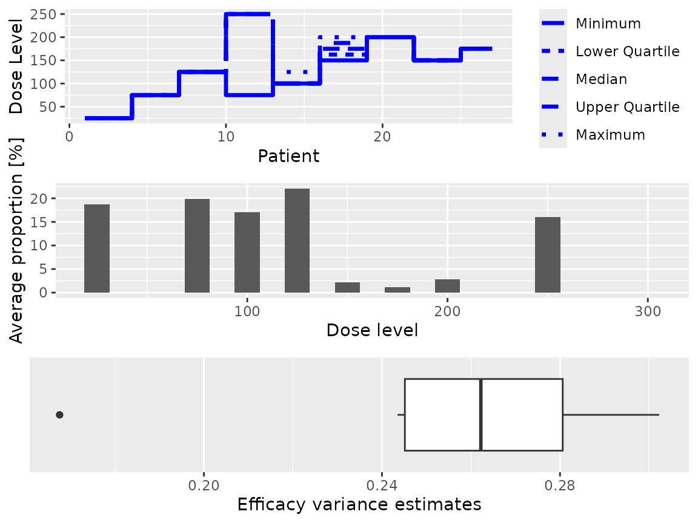
plot(Sim2)
plot(Sim3)The plots give an overview of the final dose recommendations and
trial trajectories. In addition, they also give a summary of the
efficacy variance and also the random walk model variance when the
EffFlexi class object is used for the efficacy model.
Then, the summary and the plot of the summary of the simulations can be obtained by:
Sum1 <- summary(Sim1,
trueDLE = myTruthDLT,
trueEff = myTruthEff
)
Sum1## Summary of 10 simulations
##
## Target probability of DLE p(DLE) used at the end of a trial was 30 %
## The dose level corresponds to the target p(DLE) used at the end of a trial, TDEOT, was 152.6195
## TDEOT at dose Grid was 150
## Target p(DLE) used during a trial was 35 %
## The dose level corresponds to the target p(DLE) used during a trial, TDDT, was 155.972
## TDDT at dose Grid was 150
## Number of patients overall : mean 16 (15, 19)
## Number of patients treated above the target p(DLE) used at the end of a trial : mean 3 (3, 3)
## Number of patients treated above the target p(DLE) used during a trial : mean 3 (3, 3)
## Proportions of observed DLT in the trials : mean 21 % (20 %, 23 %)
## Mean toxicity risks for the patients : mean 21 % (20 %, 21 %)
## Doses selected as TDEOT : mean 100 (97.5, 102.5)
## True toxicity at TDEOT : mean 1 % (0 %, 1 %)
## Proportion of trials selecting the TDEOT: 0 %
## Proportion of trials selecting the TDDT: 0 %
## Dose most often selected as TDEOT: 100
## Observed toxicity rate at dose most often selected: 0 %
## Fitted probabilities of DLE at dose most often selected : mean 24 % (24 %, 24 %)
## The summary table of the final TDEOT across all simulations
## Min. 1st Qu. Median Mean 3rd Qu. Max.
## 98.18 123.81 123.81 122.23 123.81 133.63
## The summary table of the final ratios of the TDEOT across all simulations
## Min. 1st Qu. Median Mean 3rd Qu. Max.
## 3.849 4.447 4.447 4.442 4.447 4.993
## The summary table of the final TDDT across all simulations
## Min. 1st Qu. Median Mean 3rd Qu. Max.
## 118.2 144.4 144.4 143.5 144.4 161.5
## The summary table of dose levels, the optimal dose
## to recommend for subsequent study across all simulations
## Min. 1st Qu. Median Mean 3rd Qu. Max.
## 98.18 123.81 123.81 122.23 123.81 133.63
## The summary table of the final ratios of the optimal dose for stopping across
## all simulations
## Min. 1st Qu. Median Mean 3rd Qu. Max.
## 3.849 4.447 4.447 4.442 4.447 4.993
##
## Target Gstar, the dose which gives the maximum gain value was 130.0097
## Target Gstar at dose Grid was 125
## The summary table of the final Gstar across all simulations
## Min. 1st Qu. Median Mean 3rd Qu. Max.
## 142.9 146.7 152.1 152.6 153.1 178.6
## The summary table of the final ratios of the Gstar across all simulations
## Min. 1st Qu. Median Mean 3rd Qu. Max.
## 6.807 6.985 7.188 7.691 7.472 10.729
## The summary table of dose levels, the optimal dose
## to recommend for subsequent study across all simulations
## Min. 1st Qu. Median Mean 3rd Qu. Max.
## 98.18 123.81 123.81 122.23 123.81 133.63
## The summary table of the final ratios of the optimal dose for stopping across
## all simulations
## Min. 1st Qu. Median Mean 3rd Qu. Max.
## 3.849 4.447 4.447 4.442 4.447 4.993
## Fitted expected efficacy level at dose most often selected : mean 0.9 (0.9, 1)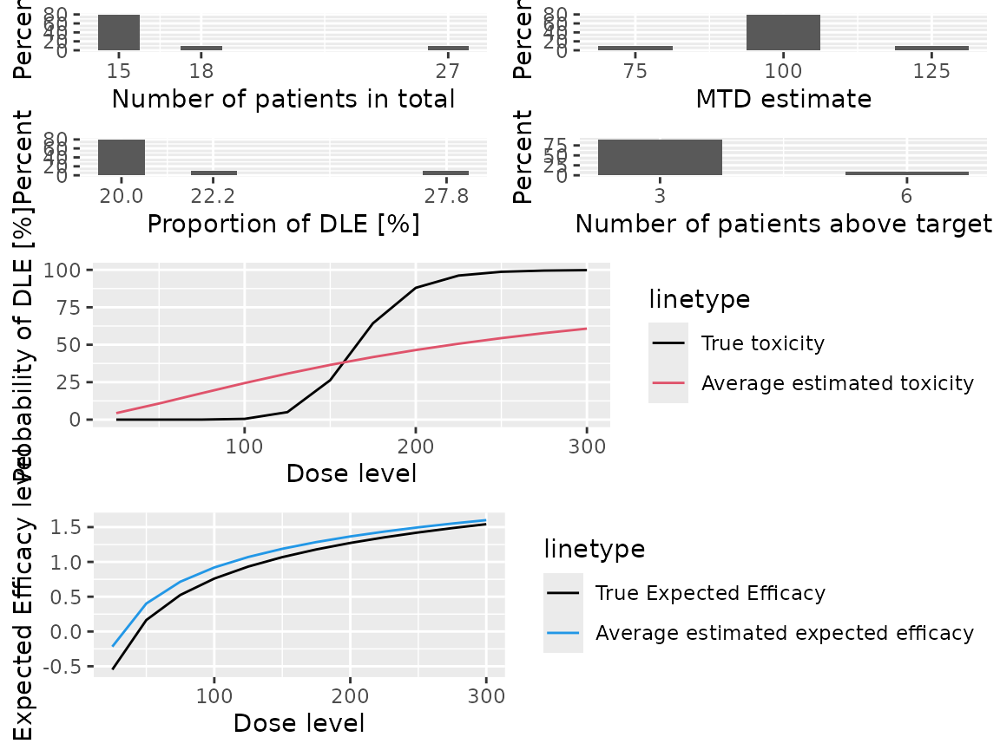
Sum2 <- summary(Sim2,
trueDLE = myTruthDLT,
trueEff = myTruthEff
)
Sum2## Summary of 10 simulations
##
## Target probability of DLE p(DLE) used at the end of a trial was 30 %
## The dose level corresponds to the target p(DLE) used at the end of a trial, TDEOT, was 152.6195
## TDEOT at dose Grid was 150
## Target p(DLE) used during a trial was 35 %
## The dose level corresponds to the target p(DLE) used during a trial, TDDT, was 155.972
## TDDT at dose Grid was 150
## Number of patients overall : mean 45 (36, 51)
## Number of patients treated above the target p(DLE) used at the end of a trial : mean 8 (3, 12)
## Number of patients treated above the target p(DLE) used during a trial : mean 8 (3, 12)
## Proportions of observed DLT in the trials : mean 19 % (17 %, 20 %)
## Mean toxicity risks for the patients : mean 19 % (15 %, 25 %)
## Doses selected as TDEOT : mean 120 (100, 125)
## True toxicity at TDEOT : mean 4 % (1 %, 5 %)
## Proportion of trials selecting the TDEOT: 0 %
## Proportion of trials selecting the TDDT: 0 %
## Dose most often selected as TDEOT: 125
## Observed toxicity rate at dose most often selected: 6 %
## Fitted probabilities of DLE at dose most often selected : mean 25 % (23 %, 27 %)
## The summary table of the final TDEOT across all simulations
## Min. 1st Qu. Median Mean 3rd Qu. Max.
## 115.0 127.6 135.9 132.4 138.6 143.8
## The summary table of the final ratios of the TDEOT across all simulations
## Min. 1st Qu. Median Mean 3rd Qu. Max.
## 1 1 1 1 1 1
## The summary table of the final TDDT across all simulations
## Min. 1st Qu. Median Mean 3rd Qu. Max.
## 133.2 151.0 155.9 154.2 159.3 168.8
## The summary table of dose levels, the optimal dose
## to recommend for subsequent study across all simulations
## Min. 1st Qu. Median Mean 3rd Qu. Max.
## 115.0 127.6 135.9 132.4 138.6 143.8
## The summary table of the final ratios of the optimal dose for stopping across
## all simulations
## Min. 1st Qu. Median Mean 3rd Qu. Max.
## 1 1 1 1 1 1
##
## Target Gstar, the dose which gives the maximum gain value was 130.0097
## Target Gstar at dose Grid was 125
## The summary table of the final Gstar across all simulations
## Min. 1st Qu. Median Mean 3rd Qu. Max.
## 150.0 175.0 187.5 182.5 200.0 200.0
## The summary table of the final ratios of the Gstar across all simulations
## Min. 1st Qu. Median Mean 3rd Qu. Max.
## 2.4 2.4 2.4 2.4 2.4 2.4
## The summary table of dose levels, the optimal dose
## to recommend for subsequent study across all simulations
## Min. 1st Qu. Median Mean 3rd Qu. Max.
## 115.0 127.6 135.9 132.4 138.6 143.8
## The summary table of the final ratios of the optimal dose for stopping across
## all simulations
## Min. 1st Qu. Median Mean 3rd Qu. Max.
## 1 1 1 1 1 1
## Fitted expected efficacy level at dose most often selected : mean 1 (1, 1)
Sum3 <- summary(Sim3,
trueDLE = myTruthDLT,
trueEff = myTruthEff1
)
Sum3## Summary of 10 simulations
##
## Target probability of DLE p(DLE) used at the end of a trial was 30 %
## The dose level corresponds to the target p(DLE) used at the end of a trial, TDEOT, was 152.6195
## TDEOT at dose Grid was 150
## Target p(DLE) used during a trial was 35 %
## The dose level corresponds to the target p(DLE) used during a trial, TDDT, was 155.972
## TDDT at dose Grid was 150
## Number of patients overall : mean 50 (39, 58)
## Number of patients treated above the target p(DLE) used at the end of a trial : mean 8 (6, 12)
## Number of patients treated above the target p(DLE) used during a trial : mean 8 (6, 12)
## Proportions of observed DLT in the trials : mean 21 % (18 %, 24 %)
## Mean toxicity risks for the patients : mean 20 % (15 %, 24 %)
## Doses selected as TDEOT : mean 115 (100, 125)
## True toxicity at TDEOT : mean 3 % (1 %, 5 %)
## Proportion of trials selecting the TDEOT: 0 %
## Proportion of trials selecting the TDDT: 0 %
## Dose most often selected as TDEOT: 125
## Observed toxicity rate at dose most often selected: 4 %
## Fitted probabilities of DLE at dose most often selected : mean 27 % (25 %, 28 %)
## The summary table of the final TDEOT across all simulations
## Min. 1st Qu. Median Mean 3rd Qu. Max.
## 113.1 123.7 127.0 127.0 130.0 137.2
## The summary table of the final ratios of the TDEOT across all simulations
## Min. 1st Qu. Median Mean 3rd Qu. Max.
## 1 1 1 1 1 1
## The summary table of the final TDDT across all simulations
## Min. 1st Qu. Median Mean 3rd Qu. Max.
## 128.9 143.6 149.2 149.0 154.4 169.5
## The summary table of dose levels, the optimal dose
## to recommend for subsequent study across all simulations
## Min. 1st Qu. Median Mean 3rd Qu. Max.
## 113.1 123.7 127.0 127.0 130.0 137.2
## The summary table of the final ratios of the optimal dose for stopping across
## all simulations
## Min. 1st Qu. Median Mean 3rd Qu. Max.
## 1 1 1 1 1 1
##
## Target Gstar, the dose which gives the maximum gain value was 125
## Target Gstar at dose Grid was 125
## The summary table of the final Gstar across all simulations
## Min. 1st Qu. Median Mean 3rd Qu. Max.
## 250.0 250.0 250.0 262.5 275.0 300.0
## The summary table of the final ratios of the Gstar across all simulations
## Min. 1st Qu. Median Mean 3rd Qu. Max.
## 1.333 1.500 1.857 1.938 2.000 3.000
## The summary table of dose levels, the optimal dose
## to recommend for subsequent study across all simulations
## Min. 1st Qu. Median Mean 3rd Qu. Max.
## 113.1 123.7 127.0 127.0 130.0 137.2
## The summary table of the final ratios of the optimal dose for stopping across
## all simulations
## Min. 1st Qu. Median Mean 3rd Qu. Max.
## 1 1 1 1 1 1
## Fitted expected efficacy level at dose most often selected : mean 0.9 (0.9, 1)
# nolint endIn the first simulation, Sim1 the trial will only stop
when the ratio of the 95% credibility interval bounds of the current
estimate of the minimum between TD30(TDtargetEndOfTrial) and Gstar is
less than or equal to 5. The last two simulations, Sim2 and
Sim3, use trials which only stop either when a maximum of
72 patients has been treated or when the ratio of the 95% credibility
interval is less than or equal to 5. We can see that in all of the above
simulations all trials require a total of around 60 patients for a
study.
As a reminder, for the dual endpoint dose escalation design which uses two separate models to describe the dose-responses relationship, the gain function is used to determine the next best dose and the final recommended dose at the end of a trial. More specifically at the end of a trial, we will recommend the dose level closest below which is the minimum of final estimate of the TD30 (TDtargetEndOfTrial) and Gstar.
The DLT and efficacy scenario that we used for the first,
Sim1 and the second simulations, Sim2 are the
same. The real TD30 (TDtargetEndOfTrial) is given in the summary and is
152.6125 mg and the dose level at doseGrid which is closest and below
this real TD30 is 150 mg. The real Gstar is 130.0097 mg and the dose
level in the dose grid closest to this Gstar is 125 mg.
In this case, the real Gstar is less than the real TD30 and we will expect most of the recommendations to be made at a dose level close to the real Gstar. In other words, under this scenario, we will expect most of the recommendations made at 125 mg. We can see that the simulated results agrees to what we are expecting. From the summaries and the plots of the summaries, 125 mg is the dose level which is selected most often in both of these simulations.
For the scenario of last simulation, Sim3, we have the
same real TD30 and the real Gstar is 125 mg. Since the real TD30 is
greater than the real Gstar, we will also expect recommendations should
be made close to the real Gstar under this scenario. We can see that
from the simulated results in the summary or the plot of summary, the
procedure also recommends 125 mg most often in the simulations, which
agrees with our real scenario.
Now, we will also look at the fitted dose-DLT and dose-efficacy
curves obtained under all these three simulations. From the plots of
summaries, we can see that in all cases, the fitted dose-DLT curves
(solid-red curve) do not approximate very well to the real dose-DLT
curve (solid-black curve). The 95% credibility interval of the DLT curve
(broken-red curves) is also given when MCMC samples are involved in the
simulation. In contrast, we can see that the fitted efficacy curve
(solid-blue curve) gives a very good fit to the real efficacy curve
(solid-black) in all cases. The approximation to the real efficacy curve
is better when the linear linear log-log model, Effloglog
is used, compared to when the flexible form , EffFlexi is
used. In addition, we can also see the 95% credibility interval of the
efficacy curve (broken-blue line) when MCMC sampling of the efficacy
responses is involved.